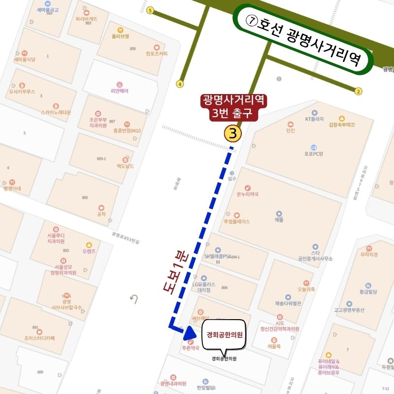

<!DOCTYPE html>
<html lang="ko">
<head>
    <meta charset="UTF-8">
    <meta name="viewport" content="width=device-width, initial-scale=1.0">
    <title>광명 한의원 경희공한의원 | 광명사거리역 한방내과 전문의 공건식</title>

    <!-- SEO 기본 메타 태그 -->
    <meta name="description" content="광명시 한의원 경희공한의원. 광명사거리역 3번 출구 도보 1분, 한방내과 전문의 공건식 대표원장의 1:1 맞춤 한약 처방 및 정통 추나, 척추·관절·교통사고·안면마비·손발저림·비만·불면증 치료.">
    <meta name="keywords" content="광명시 한의원, 광명사거리 한의원, 광명 한약 잘짓는 곳, 광명 한약 처방, 광명 보약, 경희공한의원, 한방내과 전문의, 광명 추나요법, 교통사고 한의원, 안면마비 한의원, 손발저림, 비만클리닉, 불면증">
    <meta name="author" content="경희공한의원">
    <meta name="robots" content="index, follow, max-image-preview:large, max-snippet:-1, max-video-preview:-1">
    
    <!-- AI 웹 로봇 수집 허용 지정 -->
    <meta name="GPTBot" content="index, follow">
    <meta name="ChatGPT-User" content="index, follow">
    <meta name="ClaudeBot" content="index, follow">

    <link rel="canonical" href="https://example.com/">

    <!-- 지역 검색 최적화(Local SEO) 지오 태그 -->
    <meta name="geo.region" content="KR-41">
    <meta name="geo.placename" content="광명시">
    <meta name="geo.position" content="37.47927;126.85483">
    <meta name="ICBM" content="37.47927, 126.85483">

    <!-- Open Graph -->
    <meta property="og:type" content="website">
    <meta property="og:title" content="광명 한의원 경희공한의원 | 광명사거리역 한방내과 전문의">
    <meta property="og:description" content="광명시 광명사거리역 도보 1분, 한방내과 전문의 공건식 대표원장의 1:1 책임 진료. 맞춤 한약 처방·척추·관절·교통사고·안면마비·손발저림·비만·불면증 클리닉.">
    <meta property="og:image" content="images/hero/hero01.jpg">
    <meta property="og:url" content="https://example.com/">
    <meta property="og:locale" content="ko_KR">
    <meta property="og:site_name" content="경희공한의원">

    <!-- Twitter Card -->
    <meta name="twitter:card" content="summary_large_image">
    <meta name="twitter:title" content="광명 한의원 경희공한의원 | 광명사거리역 한방내과 전문의">
    <meta name="twitter:description" content="한방내과 전문의 공건식 대표원장의 1:1 맞춤 한약 처방 및 책임 진료. 광명사거리역 도보 1분.">
    <meta name="twitter:image" content="images/hero/hero01.jpg">

    <!-- Favicon -->
    <link rel="icon" type="image/svg+xml" href="data:image/svg+xml,%3Csvg xmlns='http://www.w3.org/2000/svg' viewBox='0 0 100 100'%3E%3Ccircle cx='50' cy='50' r='45' fill='%238B0000'/%3E%3Ctext x='50' y='68' font-size='55' fill='white' text-anchor='middle' font-family='sans-serif' font-weight='900'%3E공%3C/text%3E%3C/svg%3E">

    <!-- JSON-LD 구조화 데이터 -->
    <script type="application/ld+json">
    [
      {
        "@context": "https://schema.org",
        "@type": "MedicalClinic",
        "@id": "https://example.com/#clinic",
        "name": "경희공한의원",
        "alternateName": ["광명 경희공한의원", "광명시 한방내과 전문의 한의원"],
        "url": "https://example.com/",
        "image": "images/hero/hero01.jpg",
        "telephone": "02-6952-9524",
        "priceRange": "$$",
        "address": {
          "@type": "PostalAddress",
          "streetAddress": "광명로 892, 3층",
          "addressLocality": "광명시",
          "addressRegion": "경기도",
          "postalCode": "14257",
          "addressCountry": "KR"
        },
        "geo": {
          "@type": "GeoCoordinates",
          "latitude": 37.47927,
          "longitude": 126.85483
        },
        "areaServed": [
          { "@type": "City", "name": "광명시" },
          { "@type": "Place", "name": "광명사거리역" },
          { "@type": "Place", "name": "광명동" },
          { "@type": "Place", "name": "철산동" },
          { "@type": "Place", "name": "하안동" }
        ],
        "hasMap": "https://naver.me/5GGsG67V",
        "sameAs": [
          "https://blog.naver.com/geography-of-thought",
          "https://www.instagram.com/khkongclinic"
        ],
        "medicalSpecialty": ["TraditionalChinese", "InternalMedicine"],
        "openingHoursSpecification": [
          {
            "@type": "OpeningHoursSpecification",
            "dayOfWeek": ["Monday", "Tuesday", "Wednesday", "Friday"],
            "opens": "09:30",
            "closes": "20:00"
          },
          {
            "@type": "OpeningHoursSpecification",
            "dayOfWeek": ["Saturday", "Sunday"],
            "opens": "09:30",
            "closes": "15:00"
          }
        ],
        "founder": {
          "@type": "Person",
          "name": "공건식",
          "jobTitle": "대표원장 / 한방내과 전문의",
          "alumniOf": "경희대학교 한의과대학"
        }
      }
    ]
    </script>

    <script src="https://cdn.tailwindcss.com"></script>
    <script>
        tailwind.config = {
            theme: {
                extend: {
                    colors: {
                        brand: '#8B0000',
                        brandLight: '#A52A2A',
                        brandDark: '#5C0000',
                        accent: '#991B1B',
                        gold: '#D4AF37',
                        slateBg: '#F8FAFC',
                        naverGreen: '#03C75A',
                        kakaoYellow: '#FEE500',
                        kakaoText: '#381E1F'
                    },
                    fontFamily: {
                        sans: ['Noto Sans KR', 'sans-serif'],
                        serif: ['Noto Serif KR', 'serif'],
                    }
                }
            }
        }
    </script>

    <link rel="stylesheet" href="https://cdnjs.cloudflare.com/ajax/libs/font-awesome/6.4.0/css/all.min.css">
    <link rel="preconnect" href="https://fonts.googleapis.com">
    <link rel="preconnect" href="https://fonts.gstatic.com" crossorigin>
    <link href="https://fonts.googleapis.com/css2?family=Noto+Sans+KR:wght@300;400;500;700;900&family=Noto+Serif+KR:wght@500;700;900&display=swap" rel="stylesheet">

    <!-- React & Babel CDN -->
    <script src="https://unpkg.com/react@18/umd/react.production.min.js" crossorigin></script>
    <script src="https://unpkg.com/react-dom@18/umd/react-dom.production.min.js" crossorigin></script>
    <script src="https://unpkg.com/@babel/standalone/babel.min.js"></script>

    <style>
        html { scroll-behavior: smooth; }
        body { font-family: 'Noto Sans KR', sans-serif; word-break: keep-all; }
        .font-serif { font-family: 'Noto Serif KR', serif; }
        .word-keep { word-break: keep-all; }

        ::-webkit-scrollbar { width: 8px; height: 8px; }
        ::-webkit-scrollbar-track { background: #f1f5f9; }
        ::-webkit-scrollbar-thumb { background: #8B0000; border-radius: 4px; }
        ::-webkit-scrollbar-thumb:hover { background: #5C0000; }

        a:focus-visible, button:focus-visible {
            outline: 2px solid #D4AF37;
            outline-offset: 2px;
            border-radius: 4px;
        }

        @keyframes fadeInDown {
            from { opacity: 0; transform: translateY(-20px); }
            to { opacity: 1; transform: translateY(0); }
        }
        @keyframes fadeInUp {
            from { opacity: 0; transform: translateY(20px); }
            to { opacity: 1; transform: translateY(0); }
        }
        .fade-in-down { animation: fadeInDown 0.8s ease-out forwards; }
        .fade-in-up { animation: fadeInUp 0.4s ease-out forwards; }

        .reveal-on-scroll {
            opacity: 0;
            transform: translateY(40px) scale(0.99);
            transition: opacity 2.0s cubic-bezier(0.16, 1, 0.3, 1), transform 2.0s cubic-bezier(0.16, 1, 0.3, 1);
            will-change: opacity, transform;
        }
        .reveal-on-scroll.is-visible {
            opacity: 1;
            transform: translateY(0) scale(1);
        }

        /* 좌우에서 등장하는 섹션용 모션 */
        .reveal-from-left, .reveal-from-right {
            opacity: 0;
            will-change: opacity, transform;
            transition: opacity 1.1s cubic-bezier(0.16, 1, 0.3, 1), transform 1.1s cubic-bezier(0.16, 1, 0.3, 1);
        }
        .reveal-from-left {
            transform: translateX(-70px);
        }
        .reveal-from-right {
            transform: translateX(70px);
        }
        .reveal-from-left.is-visible, .reveal-from-right.is-visible {
            opacity: 1;
            transform: translateX(0);
        }

        .reveal-stagger > * {
            opacity: 0;
            transform: translateY(30px);
            transition: opacity 1.8s cubic-bezier(0.16, 1, 0.3, 1), transform 1.8s cubic-bezier(0.16, 1, 0.3, 1);
        }
        .reveal-stagger.is-visible > *:nth-child(1) { transition-delay: 0.1s; opacity: 1; transform: translateY(0); }
        .reveal-stagger.is-visible > *:nth-child(2) { transition-delay: 0.2s; opacity: 1; transform: translateY(0); }
        .reveal-stagger.is-visible > *:nth-child(3) { transition-delay: 0.3s; opacity: 1; transform: translateY(0); }
        .reveal-stagger.is-visible > *:nth-child(4) { transition-delay: 0.4s; opacity: 1; transform: translateY(0); }
    </style>
</head>
<body class="bg-slate-50 text-gray-800 antialiased selection:bg-brand selection:text-white pb-20 md:pb-0 overflow-x-hidden">

    <div id="root"></div>

    <script type="text/babel">
        const { useState, useEffect, useRef } = React;

        const Icons = {
            Menu: () => <i className="fas fa-bars text-2xl"></i>,
            Close: () => <i className="fas fa-times text-2xl"></i>,
            Phone: () => <i className="fas fa-phone-alt text-brand"></i>,
            MapMarker: () => <i className="fas fa-map-marker-alt"></i>,
            Clock: () => <i className="far fa-clock"></i>,
            Check: () => <i className="fas fa-check-circle text-brand flex-shrink-0"></i>,
            
            Pain: () => <i className="fas fa-hand-holding-medical text-3xl md:text-4xl text-brand"></i>,
            Fracture: () => <i className="fas fa-bone text-3xl md:text-4xl text-brand"></i>,
            Car: () => <i className="fas fa-car-burst text-3xl md:text-4xl text-brand"></i>, 
            Numbness: () => <i className="fas fa-bolt text-3xl md:text-4xl text-brand"></i>,
            Cancer: () => <i className="fas fa-ribbon text-3xl md:text-4xl text-brand"></i>,
            Bronchus: () => <i className="fas fa-lungs text-3xl md:text-4xl text-brand"></i>,
            Edema: () => <i className="fas fa-shoe-prints text-3xl md:text-4xl text-brand"></i>,
            Diet: () => <i className="fas fa-weight-scale text-3xl md:text-4xl text-brand"></i>,
            Sleep: () => <i className="fas fa-moon text-3xl md:text-4xl text-brand"></i>, 
            Autonomic: () => <i className="fas fa-heart-pulse text-3xl md:text-4xl text-brand"></i>,
            Stomach: () => <i className="fas fa-utensils text-3xl md:text-4xl text-brand"></i>,
            Facial: () => <i className="fas fa-face-smile-beam text-3xl md:text-4xl text-brand"></i>,
            Mortar: () => <i className="fas fa-mortar-pestle text-3xl md:text-4xl text-brand"></i>,
            Posture: () => <i className="fas fa-child-reaching text-3xl md:text-4xl text-brand"></i>,

            Stethoscope: () => <i className="fas fa-stethoscope"></i>,
            Calendar: () => <i className="far fa-calendar-check"></i>,
            Comment: () => <i className="fas fa-comment"></i>,
            Blog: () => <i className="fas fa-blog"></i>
        };

        const NAVER_BOOKING_URL = "https://m.booking.naver.com/booking/16/bizes/1641471?theme=place&service-target=map-pc&lang=ko&area=bmp&map-search=1";
        const NAVER_MAP_URL = "https://naver.me/5GGsG67V";
        const NAVER_BLOG_URL = "https://blog.naver.com/geography-of-thought";
        const INSTAGRAM_URL = "https://www.instagram.com/khkongclinic";
        const KAKAO_TALK_URL = "https://pf.kakao.com/_DrDZX/chat";
        const TEL_NUMBER = "02-6952-9524";
        const ADDRESS_TEXT = "경기도 광명시 광명로 892, 3층";

        const HERO_IMAGES = [
            'images/hero/hero01.jpg',
            'images/hero/hero02.jpg',
            'images/hero/hero03.jpg',
            'images/hero/hero04.jpg',
            'images/hero/hero05.jpg'
        ];

        function QuickFloatingWidget({ scrollToTop }) {
            const [isOpen, setIsOpen] = useState(true);

            return (
                <div className="hidden md:flex fixed right-4 bottom-8 z-50 flex-col items-center">
                    {isOpen ? (
                        <div className="bg-[#8B5A2B]/90 hover:bg-[#8B5A2B] backdrop-blur-md text-white rounded-full py-4 px-2.5 shadow-2xl flex flex-col items-center gap-4 border border-white/20 transition-all duration-300 w-16">
                            <a href={NAVER_BLOG_URL} target="_blank" rel="noopener noreferrer" className="flex flex-col items-center group text-center">
                                <i className="fas fa-blog text-xl mb-1 text-white group-hover:scale-110 transition-transform"></i>
                                <span className="text-[10px] font-bold tracking-tight">블로그</span>
                            </a>
                            <a href={INSTAGRAM_URL} target="_blank" rel="noopener noreferrer" className="flex flex-col items-center group text-center">
                                <i className="fab fa-instagram text-xl mb-1 text-white group-hover:scale-110 transition-transform"></i>
                                <span className="text-[10px] font-bold tracking-tight">인스타그램</span>
                            </a>
                            <a href={NAVER_BOOKING_URL} target="_blank" rel="noopener noreferrer" className="flex flex-col items-center group text-center">
                                <i className="far fa-calendar-check text-xl mb-1 text-white group-hover:scale-110 transition-transform"></i>
                                <span className="text-[10px] font-bold tracking-tight">네이버 예약</span>
                            </a>
                            <a href={KAKAO_TALK_URL} target="_blank" rel="noopener noreferrer" className="flex flex-col items-center group text-center">
                                <i className="fas fa-comment text-xl mb-1 text-white group-hover:scale-110 transition-transform"></i>
                                <span className="text-[10px] font-bold tracking-tight">카톡 채널</span>
                            </a>
                            <button onClick={scrollToTop} className="flex flex-col items-center group text-center pt-1 border-t border-white/20 w-full">
                                <i className="fas fa-arrow-up text-lg mb-0.5 text-yellow-300 group-hover:-translate-y-1 transition-transform"></i>
                                <span className="text-[10px] font-bold tracking-tight text-yellow-300">TOP</span>
                            </button>
                            <button onClick={() => setIsOpen(false)} className="mt-1 pt-2 border-t border-white/20 text-white/80 hover:text-white" aria-label="위젯 닫기">
                                <i className="fas fa-times text-lg"></i>
                            </button>
                        </div>
                    ) : (
                        <button onClick={() => setIsOpen(true)} className="bg-[#8B5A2B] text-white w-12 h-12 rounded-full shadow-2xl flex items-center justify-center border-2 border-white hover:scale-105 transition-all" aria-label="퀵 메뉴 열기">
                            <i className="fas fa-plus text-lg"></i>
                        </button>
                    )}
                </div>
            );
        }

        const SLIDE_IMAGES = [
            { id: 1, url: 'images/gallery/gallery01.jpg' },
            { id: 2, url: 'images/gallery/gallery02.jpg' },
            { id: 3, url: 'images/gallery/gallery03.jpg' },
            { id: 4, url: 'images/gallery/gallery04.jpg' },
            { id: 5, url: 'images/gallery/gallery05.jpg' },
            { id: 6, url: 'images/gallery/gallery06.jpg' },
            { id: 7, url: 'images/gallery/gallery07.jpg' }
        ];

        function GallerySlider() {
            const [currentIndex, setCurrentIndex] = useState(0);

            useEffect(() => {
                const timer = setInterval(() => {
                    setCurrentIndex((prevIndex) => (prevIndex + 1) % SLIDE_IMAGES.length);
                }, 3000);
                return () => clearInterval(timer);
            }, []);

            const goPrev = () => {
                setCurrentIndex((prev) => (prev - 1 + SLIDE_IMAGES.length) % SLIDE_IMAGES.length);
            };

            const goNext = () => {
                setCurrentIndex((prev) => (prev + 1) % SLIDE_IMAGES.length);
            };

            return (
                <section id="gallery" className="py-20 bg-slate-100 border-t border-gray-200 overflow-hidden">
                    <div className="container mx-auto px-4 max-w-6xl">
                        <div className="text-center mb-10 reveal-on-scroll">
                            <h2 className="text-3xl md:text-4xl font-serif font-black text-gray-900">한의원 둘러보기</h2>
                        </div>
                        <div className="relative w-full max-w-6xl mx-auto rounded-3xl overflow-hidden shadow-2xl group border-4 border-white bg-gray-900 reveal-on-scroll">
                            <div className="relative w-full h-[360px] sm:h-[460px] md:h-[560px] lg:h-[640px] overflow-hidden">
                                {SLIDE_IMAGES.map((item, index) => (
                                    <div key={item.id} className={`absolute inset-0 transition-opacity duration-1000 ease-in-out ${index === currentIndex ? 'opacity-100 z-10' : 'opacity-0 z-0'}`}>
                                        
                                    </div>
                                ))}
                            </div>

                            <button
                                onClick={goPrev}
                                className="absolute left-3 md:left-5 top-1/2 -translate-y-1/2 z-20 w-9 h-9 md:w-11 md:h-11 rounded-full bg-white/80 hover:bg-white text-gray-800 flex items-center justify-center shadow-lg transition-all"
                                aria-label="이전 사진"
                            >
                                <i className="fas fa-chevron-left text-sm md:text-base"></i>
                            </button>
                            <button
                                onClick={goNext}
                                className="absolute right-3 md:right-5 top-1/2 -translate-y-1/2 z-20 w-9 h-9 md:w-11 md:h-11 rounded-full bg-white/80 hover:bg-white text-gray-800 flex items-center justify-center shadow-lg transition-all"
                                aria-label="다음 사진"
                            >
                                <i className="fas fa-chevron-right text-sm md:text-base"></i>
                            </button>
                        </div>

                        <div className="max-w-6xl mx-auto mt-4 md:mt-5 grid grid-cols-4 sm:grid-cols-7 gap-2.5 md:gap-3 reveal-on-scroll">
                            {SLIDE_IMAGES.map((item, index) => (
                                <button
                                    key={item.id}
                                    onClick={() => setCurrentIndex(index)}
                                    className={`relative aspect-video rounded-xl overflow-hidden border-2 transition-all duration-300 ${
                                        index === currentIndex ? 'border-brand ring-2 ring-brand/30 scale-[1.03]' : 'border-white/60 hover:border-brand/50 opacity-80 hover:opacity-100'
                                    }`}
                                    aria-label={`${item.id}번째 사진 보기`}
                                >
                                    
                                </button>
                            ))}
                        </div>
                    </div>
                </section>
            );
        }

        const ADVANTAGES_DATA = [
            { num: '01', title: '한방내과 전문의 진료', desc: '경희대 한의대 출신 한방내과 전문의 대표원장이 처음부터 끝까지 꼼꼼하게 책임 진료합니다.' },
            { num: '02', title: '원내 직접 탕전 시스템', desc: '엄선된 hGMP 인증 규격 한약재와 정품 러시아산 원용 녹용을 원내에서 직접 정성껏 탕전합니다.' },
            { num: '03', title: '자생한방병원 출신 대표원장', desc: '풍부한 임상 경험을 바탕으로 틀어진 척추와 관절 구조를 세심하게 교정합니다.' },
            { num: '04', title: '평일 야간 및 주말 진료', desc: '바쁜 직장인과 학생들을 위해 평일 야간진료 및 토·일·공휴일 진료를 시행합니다.' }
        ];

        const MAIN_CATEGORIES = [
            { id: 'spine', title: '척추·관절·골절·교통사고', desc: '목·허리 디스크, 관절염, 골절 유합 및 교통사고 후유증 정통 추나 치료', iconClass: 'fa-bone' },
            { id: 'neuro', title: '안면마비·손발저림·자율신경', desc: '구안와사, 당뇨·항암 후 손발저림(말초신경병증), 자율신경실조증 케어', iconClass: 'fa-brain' },
            { id: 'internal', title: '한방내과·호흡기', desc: '항암 보조, 만성 기침·비염(보폐고 NO), 하지 부종(부종환 엔오), 불면증, 소화불량', iconClass: 'fa-lungs' },
            { id: 'custom', title: '다이어트·보약', desc: '부담 없는 감비환과 맞춤 다이어트 한약 & 정품 원용 녹용 보약, 공진단, 경옥고', iconClass: 'fa-mortar-pestle' }
        ];

        const TREATMENTS_DATA = [
            {
                id: 'pain',
                category: 'spine',
                title: '통증 클리닉',
                desc: '비수술 척추·관절 케어 & 자생 출신 정통 추나',
                badge: '건강보험·실손보험 적용 가능',
                icon: <Icons.Pain />,
                detail: {
                    overview: '목·허리 디스크, 오십견, 퇴행성 관절염 등 만성 근골격계 통증은 염증 완화뿐 아니라 구조적 불균형을 해소하는 게 중요합니다. 경희공한의원은 틀어진 척추 관절 구조를 바르게 정렬하고 순환을 촉진하여 일상 복귀를 돕습니다.',
                    causes: [
                        '아침에 일어날 때 목이나 허리가 뻐근하고 굳어 움직이기 힘들다.',
                        '팔이나 다리가 저리고 찌릿한 당김 증상이 동반된다.',
                        '계단을 오르내릴 때 무릎 관절에 붓기와 통증이 발생한다.',
                        '남들에 비해 목과 허리가 금방 뻐근해진다.'
                    ],
                    points: [
                        '건강보험 및 실손보험 청구가 가능한 비수술 통합 한방 치료',
                        '자생한방병원 진료원장 출신의 세심한 정통 추나 교정',
                        '손상된 인대와 관절 부위에 정밀 시술하는 자생 원외탕전 정품 약침',
                        '근육 긴장을 완화하는 침구 치료 및 척추·관절 영양 공급 맞춤 한약'
                    ],
                    steps: [
                        { step: '01', title: '상세 진단 & 이학적 검사', desc: '구조적 불균형과 전신 균형 상태를 측정합니다.' },
                        { step: '02', title: '대표원장 정통 추나 교정', desc: '자생한방병원 진료원장 경력의 노하우로 비틀어진 뼈와 관절을 섬세하게 교정합니다.' },
                        { step: '03', title: '자생 원외탕전 약침 치료', desc: '품질이 검증된 정품 약침을 손상된 인대와 관절 부위에 정밀 시술합니다.' },
                        { step: '04', title: '한방 물리치료 & 맞춤 한약', desc: '근육 긴장 완화를 위한 침구 치료 및 척추·관절 영양을 돕는 맞춤 한약을 처방합니다.' }
                    ],
                    faqs: [
                        { q: '추나 치료는 실손보험 청구가 가능한가요?', a: '네, 추나요법은 국민건강보험 적용 항목이므로 가입하신 실손의료보험(실비) 약관에 따라 청구 및 보장이 가능합니다.' },
                        { q: '허리가 아플 때 한약, 약침 치료까지 꼭 받아야하나요?', a: '아니요, 환자분의 증상과 현재 상태에 따라 필요한 치료 방법을 설명 드립니다. 환자분과 의논하며 치료 방향을 결정합니다.' },
                        { q: '치료는 보통 몇 회 정도 받게 되나요?', a: '급성 염좌는 초기 3~5회 진료로도 호전되는 경우가 많으며, 만성 디스크나 협착증 등 구조적 문제는 환자 상태에 맞춰 체계적인 교정 치료 계획을 세웁니다.' },
                        { q: '운동이나 스트레칭을 병행해도 되나요?', a: '네, 담당 원장님과 상의하여 통증 부위에 무리가 가지 않는 선에서 가벼운 스트레칭을 병행하시면 회복에 도움이 됩니다.' },
                        { q: '디스크가 심한 경우에도 비수술 치료로 호전될 수 있나요?', a: '신경 마비 등 응급 수술이 필요한 경우가 아니라면, 추나요법·약침·한약을 통합한 비수술 치료로 상당수 호전을 경험하십니다. 정확한 경과는 진단 후 안내해 드립니다.' }
                    ]
                }
            },
            {
                id: 'fracture',
                category: 'spine',
                title: '골절 클리닉',
                desc: '척추압박골절 및 골절 치유 4단계 맞춤 한방·전침 통합 치료',
                badge: '골절 유합 기간 단축 및 통증 완화',
                icon: <Icons.Fracture />,
                detail: {
                    overview: '척추압박골절이나 사지 골절 시 한의학적 치료는 뼈가 단단하게 붙도록 돕고 후유증을 예방하는 데 탁월한 효과가 있습니다. 경희공한의원은 치유 단계별 맞춤 한약(당귀, 골쇄보 등)과 전침 치료를 병행하여 회복 속도를 높입니다.',
                    causes: [
                        '낙상이나 교통사고 후 등·허리에 극심한 통증이 발생하여 움직이기 어렵다.',
                        '기침이나 재채기, 돌아눕는 동작에서 뼈가 찌릿하게 울리는 통증이 있다.',
                        '골절 수술이나 깁스(보조기) 착용 후에도 잔여 통증과 시림이 지속된다.',
                        '골밀도가 저하되어 어르신들의 척추압박골절 위험이 우려된다.'
                    ],
                    points: [
                        '당귀, 홍화, 골쇄보 등의 약재로 골전구세포(Osteoprogenitor cell) 증식 및 콜라겐 합성 촉진',
                        '전침 치료를 통한 혈관신생인자(VEGF) 및 골형성 단백질(BMP-2) 활성화로 신생 혈관 및 골 형성 유도',
                        '골절 치유 4단계(염증기-가골형성기-골화기-재형성기) 맞춤 처방',
                        '양방 수술 및 보조기 착용 시 병행 가능한 부작용 없는 안전한 케어'
                    ],
                    steps: [
                        { step: '01', title: '1단계 염증기 (어혈 제거)', desc: '출혈 및 혈종 형성 시기로, 어혈을 없애고 혈액순환을 돕는 화어활혈 치료를 시행합니다.' },
                        { step: '02', title: '2~3단계 복원기 (가골 형성 및 골화)', desc: '미성숙한 뼈가 붙는 시기로, 골절 유합을 돕고 주변 근육·인대를 회복시키는 접골속근 치료를 시행합니다.' },
                        { step: '03', title: '4단계 재형성기 (골 재형성)', desc: '뼈가 정상으로 돌아가는 과정으로, 기혈을 보충하고 근골을 튼튼하게 하는 보기양혈 및 건장근골 치료를 시행합니다.' },
                        { step: '04', title: '전침 및 맞춤 한약 병행', desc: '당귀 등의 약재로 콜라겐 합성을 촉진하고, 전침 치료로 뼈 세포 형성을 유도합니다.' }
                    ],
                    faqs: [
                        { q: '양방 수술이나 보조기 착용과 병행할 수 있나요?', a: '네, 양방 수술이나 보조기 착용과 함께 한약, 침 치료를 같이 받으시면 회복 기간이 단축되고 어혈과 통증이 빠르게 개선됩니다.' },
                        { q: '골절 한약은 어떤 작용을 하나요?', a: '당귀, 홍화, 골쇄보 등의 약재가 뼈 형성 전구세포 증식 및 콜라겐 합성을 촉진하여 골절 부위가 단단하게 붙도록 돕습니다.' },
                        { q: '골다공증이 있는 어르신도 치료가 가능한가요?', a: '네, 골밀도가 낮은 어르신의 경우 골절 유합을 돕는 한약과 전침 치료가 더욱 도움이 될 수 있습니다. 전신 건강 상태를 함께 고려하여 처방합니다.' },
                        { q: '치료 기간은 얼마나 걸리나요?', a: '골절 부위와 나이, 골밀도에 따라 차이가 있으나, 통상적인 골유합 기간(약 6~8주)에 맞춰 단계별 처방을 조정하며 회복을 돕습니다.' }
                    ]
                }
            },
            {
                id: 'car',
                category: 'spine',
                title: '교통사고 후유증 클리닉',
                desc: '어혈 다스림과 척추 균형 회복을 위한 1:1 책임 진료',
                badge: '자동차보험 적용 진료',
                icon: <Icons.Car />,
                detail: {
                    overview: '교통사고 충격으로 발생하는 통증은 영상 검사상 뚜렷한 이상이 없어도 지속되는 경우가 많습니다. 한의학에서는 미세한 충격으로 생긴 어혈(瘀혈)과 편타성 손상을 원인으로 봅니다. 침, 약침, 추나요법, 맞춤 한약 등 체계적인 한방 진료를 자동차보험 절차로 이용하실 수 있습니다.',
                    causes: [
                        '사고 직후에는 괜찮았으나 수일 후부터 목·어깨·허리가 뻐근하다.',
                        '두통, 어지럼증, 메스꺼움, 가슴 두근거림이 동반된다.',
                        '온몸이 무겁고 쑤시며 휴식을 취해도 피로감이 이어진다.',
                        '예전에 아팠던 부위가 갑자기 심하게 아파졌다.'
                    ],
                    points: [
                        '자동차보험 적용으로 본인부담금 없는 1:1 진료',
                        '원내 탕전실에서 대표원장이 직접 조제하는 어혈 개선 한약',
                        '자생 원외탕전 정품 약침 및 편타성 손상 전문 정통 추나요법',
                        '심부 근육 이완과 국소 혈류 개선을 통한 후유증 만성화 방지'
                    ],
                    steps: [
                        { step: '01', title: '어혈 개선 맞춤 한약', desc: '체내 어혈을 풀고 기혈 순환을 돕는 맞춤 한약을 원내 탕전실에서 대표원장이 직접 조제합니다.' },
                        { step: '02', title: '교통사고 충격 추나요법', desc: '충격으로 뒤틀린 경추와 척추 관절의 미세한 불균형을 바르게 정렬합니다.' },
                        { step: '03', title: '자생 원외탕전 약침 시술', desc: '손상된 인대와 근육의 긴장을 완화하고 신경 회복을 돕는 약침을 시술합니다.' },
                        { step: '04', title: '한방 물리요법 & 부항 치료', desc: '심부 근육 이완과 국소 혈류 개선을 통해 후유증 만성화를 방지합니다.' }
                    ],
                    faqs: [
                        { q: '자동차보험 접수는 어떻게 진행하나요?', a: '내원 시 대인사고 접수번호와 담당자 연락처만 알려주시면 원내에서 보험사 확인 후 바로 진료를 시작하실 수 있습니다.' },
                        { q: '사고 후 언제 내원하는 것이 좋은가요?', a: '사고 초기 집중 치료가 만성 후유증을 예방하는 데 중요한 시기이므로, 통증이 경미하더라도 조기에 진찰을 받으시는 것을 권장합니다.' },
                        { q: '자동차보험 치료비는 본인 부담이 있나요?', a: '대인접수가 확인되면 본인부담금 없이 진료받으실 수 있습니다. (특약 및 보험사 정책에 따라 다를 수 있습니다.)' },
                        { q: '사고 후 시간이 많이 지났는데도 치료가 가능한가요?', a: '네, 소정의 기간 내라면 뒤늦게 나타난 후유증도 치료가 가능한 경우가 많습니다. 정확한 보험 처리 가능 여부는 접수 시 상담해 드립니다.' }
                    ]
                }
            },
            {
                id: 'body',
                category: 'spine',
                title: '바른체형 클리닉',
                desc: '거북목, 굽은등, 골반 비대칭 자생 출신 정통 추나 교정',
                badge: '1:1 체형 교정',
                icon: <Icons.Posture />,
                detail: {
                    overview: '스마트폰 사용과 장시간 좌식 생활로 인한 체형 불균형은 만성적인 근육 뭉침과 척추 질환의 원인이 됩니다. 자생한방병원 진료원장 출신의 정통 추나요법으로 틀어진 골반과 척추를 바로잡아 바른 자세를 찾아드립니다.',
                    causes: [
                        '거북목, 일자목으로 목덜미와 어깨가 항상 뭉쳐 있다.',
                        '골반이 틀어져 치마가 돌아가거나 신발 굽이 한쪽만 닳는다.',
                        '거울을 보았을 때 양쪽 어깨 높이나 다리 길이가 차이 난다.',
                        '조금만 서 있거나 걸어도 허리와 골반에 무리가 온다.'
                    ],
                    points: [
                        '자생한방병원 진료원장 출신의 세심한 수기 추나 교정',
                        '관절 가동 범위 및 체형 비대칭 정도 상세 평가',
                        '교정 효과 유지를 위한 코어 강화 운동 지도',
                        '건강보험 및 실손보험 청구 지원'
                    ],
                    steps: [
                        { step: '01', title: '체형 불균형 분석', desc: '관절 가동 범위와 체형 비대칭 정도를 상세히 평가합니다.' },
                        { step: '02', title: '정통 추나요법 시술', desc: '척추 마디와 골반 관절을 세심하게 견인 및 교정합니다.' },
                        { step: '03', title: '체형 유지 운동 지도', desc: '교정 효과가 지속될 수 있도록 코어 강화 스트레칭을 교육합니다.' }
                    ],
                    faqs: [
                        { q: '추나 치료 시 통증이 심하지 않나요?', a: '환자분의 관절 가동성과 근육 긴장 상태에 맞춰 부드럽고 안전하게 진행하므로 부담 없이 치료받으실 수 있습니다.' },
                        { q: '성장기 자녀도 체형 교정을 받을 수 있나요?', a: '네, 성장기 학생의 거북목·척추 측만 초기 증상은 조기에 교정할수록 효과가 좋습니다. 성인보다 약한 강도로 안전하게 진행합니다.' },
                        { q: '교정 효과는 얼마나 지속되나요?', a: '생활 습관에 따라 체형이 다시 틀어질 수 있어, 교정 후 안내해 드리는 자세 습관과 코어 운동을 꾸준히 실천하시는 것이 효과 유지에 중요합니다.' }
                    ]
                }
            },
            {
                id: 'facial',
                category: 'neuro',
                title: '안면마비 클리닉',
                desc: '입과 눈이 돌아가는 벨마비(Bell\'s Palsy) 및 안면신경 마비 집중 회복',
                badge: '골든타임 집중 케어',
                icon: <Icons.Facial />,
                detail: {
                    overview: '안면마비(구안와사)는 면역력 저하나 스트레스, 바이러스 감염 등으로 안면신경에 염증이 생겨 얼굴 근육이 마비되는 질환입니다. 초기에 적절한 한방 통합 치료를 진행해야 후유증이나 안면 비대칭을 최소화할 수 있습니다.',
                    causes: [
                        '한쪽 눈이 잘 감기지 않고 눈물이 흘러 건조하고 따갑다.',
                        '입이 한쪽으로 돌아가 물이나 음식을 마실 때 흘린다.',
                        '마비되기 전 귀 뒤쪽 통증(이후통)이나 뻐근함이 느껴졌다.',
                        '양치질을 할 때 오물거리지 못하고 물이 샌다.'
                    ],
                    points: [
                        '마비된 안면 근육의 신경 자극을 도모하는 전침 치료',
                        '신경 염증 완화 및 근육 자생력을 높이는 맞춤 한약 처방',
                        '안면 근육의 혈류 순환을 촉진하는 약침 및 온열 케어',
                        '경추 및 턱관절 불균형을 바로잡는 정통 추나요법 병행'
                    ],
                    steps: [
                        { step: '01', title: '안면 마비 상태 평가', desc: '마비 진행 단계 및 안면 기능 상태를 세심하게 진찰합니다.' },
                        { step: '02', title: '신경 염증 완화 한약', desc: '안면신경의 염증 및 부종을 줄이고 기혈을 보충하는 한약을 처방합니다.' },
                        { step: '03', title: '안면 전침 & 약침 시술', desc: '마비된 표정근 경혈에 미세 전침과 정품 약침으로 신경 재생을 자극합니다.' },
                        { step: '04', title: '안면 재활 운동 & 추나', desc: '마비 근육 재활을 위한 표정 운동 지도 및 경추 교정을 병행합니다.' }
                    ],
                    faqs: [
                        { q: '발병 후 언제부터 치료받는 것이 좋은가요?', a: '안면마비는 발병 직후 초기 골든타임(1~2주 이내) 집중 치료가 경과와 후유증 방지에 매우 중요하므로 가능한 한 빨리 내원하시는 것을 권장합니다.' },
                        { q: '양방 스테로이드 치료와 병행할 수 있나요?', a: '네, 초기 스테로이드 치료와 한방 침·한약 치료를 병행하면 신경 손상 회복 속도를 높이고 잔여 후유증을 줄이는 데 효과적입니다.' }
                    ]
                }
            },
            {
                id: 'numbness',
                category: 'neuro',
                title: '손발저림 클리닉',
                desc: '말초신경병증, 당뇨/항암 후 손발저림, 목·허리 신경 압박 집중 치료',
                badge: '말초 순환 & 신경 회복',
                icon: <Icons.Numbness />,
                detail: {
                    overview: '손발저림은 단순히 혈액순환만의 문제가 아니라, 목·허리 디스크로 인한 신경 압박, 당뇨나 항암치료로 인한 말초신경 손상 등 원인이 다양합니다. 정확한 원인을 진단하여 말초 신경의 감각을 회복시키고 순환을 돕습니다.',
                    causes: [
                        '손가락이나 발가락 끝이 찌릿찌릿하거나 화끈거린다.',
                        '손발에 장갑이나 양말을 낀 것처럼 감각이 둔하고 남의 살 같다.',
                        '밤이나 추운 곳에 가면 저림과 통증이 더 심해진다.',
                        '물건을 잡을 때 힘이 빠지거나 걸을 때 스펀지를 밟는 듯하다.'
                    ],
                    points: [
                        '척추 신경 압박과 말초신경 손상을 구분하는 원인별 진찰',
                        '말초 혈류량을 늘리고 말초신경 재생을 촉진하는 한약 처방',
                        '손발 경혈 부위에 약침 및 전침을 통한 신경 자극',
                        '자율신경 밸런스 회복과 부종 개선을 위한 통합 순환 케어'
                    ],
                    steps: [
                        { step: '01', title: '원인별 상세 진단', desc: '디스크 유무, 대사성 질환(당뇨/항암 등) 관련 말초신경 손상 여부를 파악합니다.' },
                        { step: '02', title: '말초 혈류 개선 한약', desc: '기혈 유통을 돕고 말초신경 영양을 보충하는 맞춤 한약을 처방합니다.' },
                        { step: '03', title: '손발 정밀 침구 치료', desc: '손끝, 발끝의 주요 경혈 및 전침 치료로 미세 신경을 자극합니다.' },
                        { step: '04', title: '원인별 추나 & 온열 치료', desc: '척추 압박 해소를 위한 추나요법 및 심부 온열 자극으로 혈류를 증대시킵니다.' }
                    ],
                    faqs: [
                        { q: '혈액순환제나 약을 먹어도 손발저림이 안 가시는데 한방 치료가 되나요?', a: '단순 혈액순환 장애가 아니라 말초신경 손상이나 척추 신경 압박이 원인인 경우가 많으므로, 한방 침·약침 및 한약으로 신경 회복을 유도하면 좋은 효과를 기대할 수 있습니다.' },
                        { q: '당뇨로 인한 손발저림(당뇨병성 신경병증)도 치료가 가능한가요?', a: '네, 혈당 관리와 병행하여 말초 신경의 혈류 순환을 돕고 말초신경 손상 진전을 막는 한방 통합 케어가 큰 도움이 됩니다.' }
                    ]
                }
            },
            {
                id: 'nerve',
                category: 'neuro',
                title: '자율신경 클리닉',
                desc: '원인 모를 가슴 두근거림, 상열감, 불안감 케어',
                badge: '신경계 밸런스 회복',
                icon: <Icons.Autonomic />,
                detail: {
                    overview: '병원 검사상 특별한 이상이 없다는 말을 들었으나 두근거림, 식은땀, 안면홍조, 어지럼증, 불안감 등이 지속된다면 자율신경의 불균형을 살펴볼 필요가 있습니다. 과도하게 항진된 교감신경을 안정시키고 전신 균형을 찾아 편안한 일상을 돕습니다.',
                    causes: [
                        '뚜렷한 이유 없이 가슴이 두근거리거나 숨이 차다.',
                        '얼굴로 열이 오르거나 갑작스러운 식은땀이 난다.',
                        '마음이 불안하고 예민해지며 소화 장애가 동반된다.',
                        '손발이 차고 머리가 맑지 않으며 멍한 느낌이 든다.'
                    ],
                    points: [
                        'HRV 자율신경계 정밀 분석으로 교감·부교감 밸런스 측정',
                        '울체된 기운을 풀고 신경계 안정을 돕는 체질 한약',
                        '교감·부교감신경절 부위 정밀 약침 및 부항 치료',
                        '흉추 교정 추나요법을 병행한 호흡 근육 이완 및 가슴 답답함 해소'
                    ],
                    steps: [
                        { step: '01', title: '자율신경계 정밀 분석', desc: '교감 및 부교감신경의 밸런스 상태를 과학적으로 측정합니다.' },
                        { step: '02', title: '기혈 순환 조율 한약', desc: '울체된 기운을 풀고 신경계 안정을 돕는 한약을 처방합니다.' },
                        { step: '03', title: '신경절 부위 약침 치료', desc: '자율신경이 나오는 부위에 약침과 부항치료를 하여 기능을 정상화합니다.' },
                        { step: '04', title: '호흡 근육 이완 & 추나', desc: '추나치료를 통해 호흡 근육을 이완하고 흉추부를 교정해 호흡을 편하게 합니다.' }
                    ],
                    faqs: [
                        { q: '치료 기간은 어느 정도 예상해야 하나요?', a: '환자분의 피로 누적 정도와 상태에 따라 다르며, 1~3개월간 꾸준한 치료를 통해 점진적인 안정을 도모합니다.' },
                        { q: '한약을 반드시 복용해야 하나요?', a: '아니요. 환자분의 상태에 따라 한약 치료의 필요성을 설명드립니다. 보험한약, 환약, 탕약 등 다양한 단계의 치료가 준비되어 있습니다.' },
                        { q: '공황장애나 불안장애 진단을 받았는데도 치료가 가능한가요?', a: '네, 정신건강의학과 치료와 병행하여 자율신경 균형을 돕는 한방 치료를 받으실 수 있습니다. 기존 치료를 임의로 중단하지 않고 상담을 통해 함께 진행합니다.' }
                    ]
                }
            },
            {
                id: 'cancer',
                category: 'internal',
                title: '항암치료 보조 클리닉',
                desc: '항암 부작용(오심·구토, 손발저림, 백혈구 감소, 피로) 완화를 위한 근거 중심 보조 케어',
                badge: '근거 중심 완화 보조 치료(Supportive Care)',
                icon: <Icons.Cancer />,
                detail: {
                    overview: '항암치료 보조 한방치료는 항암제 자체를 대체하는 치료가 아니며, 항암 화학요법 과정에서 발생하는 오심·구토, 말초신경병증, 골수억제(백혈구 감소), 피로 등 다양한 부작용을 줄이고 항암 치료 완수를 돕는 보조치료(Supportive Care)입니다. 근거 기반 연구를 바탕으로 안전하고 세심한 한방 케어를 시행합니다.',
                    causes: [
                        '항암 화학요법 후 오심, 구토, 식욕 저하로 음식 섭취가 어렵다.',
                        '항암제 투여 후 손발이 찌릿하고 저리거나 무감각해지는 말초신경병증이 있다.',
                        '항암 치료 후 백혈구/호중구 수치가 저하되어 면역력 감소가 우려된다.',
                        '극심한 암 관련 피로감과 불면증으로 일상생활의 질이 저하되어 있다.'
                    ],
                    points: [
                        '주요 경혈 전침 자극으로 급성 및 지연성 오심·구토 완화',
                        '항암제 유발 말초신경병증 감각 손상 개선 및 통증 감소',
                        '임상 연구 근거가 축적된 한약 처방으로 백혈구 및 호중구 수치 보존',
                        '자율신경 밸런스 조율을 통한 암 관련 만성 피로 및 불면 케어'
                    ],
                    steps: [
                        { step: '01', title: '오심·구토 완화 전침', desc: '주요 경혈 자극을 통해 항암제로 유발되는 급성 및 지연성 오심과 구토를 유의하게 완화합니다.' },
                        { step: '02', title: '말초신경병증 침 케어', desc: '손발저림, 통증 강도를 줄이고 감각 신경전도 및 삶의 질을 개선합니다.' },
                        { step: '03', title: '면역 보존 보조 한약', desc: '임상 연구 근거가 축적된 한약 처방으로 백혈구, 호중구 수치 보존을 돕습니다.' },
                        { step: '04', title: '피로 및 수면 장애 케어', desc: '자율신경 밸런스를 조율하여 만성 피로와 수면 장애를 케어합니다.' }
                    ],
                    faqs: [
                        { q: '항암치료 중에 한약이나 침 치료를 병행해도 안전한가요?', a: '네, 안전합니다. 항암치료 보조 한방치료는 항암 효과를 방해하지 않는 안전한 보조치료(Supportive Care) 관점으로 진행됩니다. 한약 치료 여부는 상담 후 결정하셔도 되며 환자분의 의견을 존중합니다.' },
                        { q: '항암제 유발 손발저림(말초신경병증)에도 효과가 있나요?', a: '네, 메타분석 연구에 따르면 침 및 전침 치료는 항암제로 유발된 말초신경이상과 통증 강도를 유의하게 줄이고 삶의 질을 높이는 데 효과적인 것으로 보고되었습니다.' },
                        { q: '백혈구 수치가 낮아져도 치료받을 수 있나요?', a: '네, 항암 화학요법으로 인한 백혈구 및 호중구 감소증에 대해 한약과 침 치료를 병행함으로써 면역력 보존과 수치 개선을 돕는 연구들이 보고되어 있습니다.' },
                        { q: '항암 치료가 모두 끝난 후에도 치료가 필요한가요?', a: '네, 항암 종료 후에도 손발저림이나 체력 저하, 면역력 회복이 더딘 경우가 많아 잔여 증상 관리를 위한 보조 치료 지속을 권장합니다.' }
                    ]
                }
            },
            {
                id: 'bronchus',
                category: 'internal',
                title: '기관지·호흡기 클리닉',
                desc: '천연 소염·항생 한약재와 NO(산화질소) 시너지 기반의 호흡기 통합 한방 치료',
                badge: '휴대 편의 스틱형 한약 처방 (보폐고 NO)',
                icon: <Icons.Bronchus />,
                detail: {
                    overview: '경희공한의원 호흡기 클리닉은 천연 소염·항생 작용 한약재와 NO(산화질소) 기술을 결합한 스틱형 프리미엄 한약 "보폐고 엔오(NO)" 및 증상 맞춤 보험한약 조합으로 만성 비염·축농증, 만성 기침·가래, 성대 및 인후 질환을 근본적으로 다스립니다.',
                    causes: [
                        '만성 비염, 코막힘, 축농증(부비동염) 및 코가 목 뒤로 넘어가는 후비루 증상이 지속된다.',
                        '코로나 후유증 또는 감기 후 고질적인 가래기침, 마른기침이 사라지지 않는다.',
                        '교사·강사·가수 등 목을 많이 써서 성대열, 쉰 목소리, 인후통이 잦다.',
                        '흡연으로 인해 목에 답답함과 이물감, 끈적한 가래 끼는 느낌이 지속된다.'
                    ],
                    points: [
                        '길경, 대청엽, 금은화 + NO(산화질소) 기술 결합 "보폐고 엔오(NO)" 스틱 처방',
                        '소청룡탕, 형개연교탕, 삼소음 등 건강보험 한약재 맞춤 조합',
                        '폐 혈류량 증가, 기관지 확장 및 산소포화도 증대 효과',
                        '영유아 소아부터 성인까지 연령별·목적별 안전 복용 가이드'
                    ],
                    steps: [
                        { step: '01', title: '보폐고 NO 스틱 처방', desc: '천연 소염 약재와 진해 윤폐 약재에 NO 기술을 더해 폐 혈류량 증가 및 기관지 확장을 도모합니다.' },
                        { step: '02', title: '맞춤 보험한약 조합', desc: '소청룡탕, 형개연교탕 등 건강보험 한약재를 조합하여 만성 비염 및 가래를 정밀 케어합니다.' },
                        { step: '03', title: '호흡기 강화 침구 치료', desc: '호흡기 관련 경혈 자극을 통해 인후 주변 근육 긴장 완화와 점막 순환을 촉진합니다.' },
                        { step: '04', title: '복용 가이드 안내', desc: '영유아 복용법부터 성인 치료 및 관리 복용법까지 목적에 맞게 세심히 안내합니다.' }
                    ],
                    pricingNotice: '복용법 및 가격 안내:\n• 1박스 (45포, 15일분): 170,000원\n• 2박스 (90포, 1달분): 300,000원',
                    faqs: [
                        { q: '보폐고 엔오(NO)의 판매 가격과 구매 단위는 어떻게 되나요?', a: '정가 정책에 따라 1박스(45포, 15일분) 170,000원, 2박스(90포, 1달분) 300,000원에 처방·판매되고 있습니다.' },
                        { q: '아이들도 복용이 가능한가요?', a: '네, 아이들에게 천연 항생 대용으로 유용합니다. 3세 미만은 성인의 1/3, 3세~8세 미만은 1/2 용량으로 복용하며, 분유나 올리고당에 타서 편하게 먹이실 수 있습니다.' },
                        { q: '비염이나 축농증, 만성 기침 치료 기간은 어느 정도 걸리나요?', a: '만성 코·목 질환의 경우 뿌리를 뽑기 위해 최소 한 달 이상의 복용을 권장하며, 가래가 맑아지는 경과에 맞춰 처방을 조정해 드립니다.' },
                        { q: '비염 수술을 받은 적이 있는데도 한방 치료가 도움이 되나요?', a: '네, 수술 후에도 재발하거나 잔여 증상이 남는 경우, 체질에 맞는 한약과 침 치료가 점막 재생과 순환 개선에 도움을 줄 수 있습니다.' }
                    ]
                }
            },
            {
                id: 'edema',
                category: 'internal',
                title: '하지 부종·경련 클리닉',
                desc: '\'서근이수(舒筋利水)\' 치법과 당귀작약산+NO 기반의 하지부종·경련 케어',
                badge: '당귀작약산 + 산화질소(NO) 맞춤 처방',
                icon: <Icons.Edema />,
                detail: {
                    overview: '오래 서 있거나 앉아서 일하는 직업적 요인, 순환 저하로 발생하는 하지 부종과 야간 근육 경련(쥐)은 관리가 중요합니다. 전통 당귀작약산에 근육 이완 약재와 혈관을 확장하는 산화질소(NO)를 결합한 ‘부종환 엔오’로 하지 순환을 개선합니다.',
                    causes: [
                        '오래 서 있거나 앉아 있어 저녁이면 다리와 발목이 붓고 뻐근하다.',
                        '종아리가 당기고 뭉치는 느낌이 들거나 수면 중 다리에 쥐가 자주 난다.',
                        '특발성 부종, 산후 부종, 손발 시림이나 어지럼증이 동반된다.',
                        '카페인에 민감하여 일반 다이어트약을 먹기 어렵지만 부종 개선을 원한다.'
                    ],
                    points: [
                        '당귀작약산 + 어혈/통증 약재 + 산화질소(NO) 혈관 확장 시너지 처방',
                        '\'서근이수(舒筋利水)\' 치법: 근육 긴장을 풀고 체수분 배출 유도',
                        '순한 약재 구성으로 장기 복용 시에도 부담이 없으며 수유부도 안전 복용 가능'
                    ],
                    steps: [
                        { step: '01', title: '체수분 정밀 분석', desc: '세포외수분비와 하지 부종 지수를 객관적으로 평가합니다.' },
                        { step: '02', title: '부종환 엔오 처방', desc: '초기 증상 관리(1일 3회) 또는 유지 요법(1일 1회)으로 처방합니다.' },
                        { step: '03', title: '하지 순환 침구 케어', desc: '하체 순환 및 근육 이완 경혈을 자극합니다.' },
                        { step: '04', title: '추나 & 온열 치료', desc: '골반 불균형을 바로잡고 심부 온열 자극으로 혈류를 촉진합니다.' }
                    ],
                    pricingNotice: '복용법 및 가격 안내:\n• 1박스 (30포, 10일분): 60,000원\n• 3박스 (90포, 1달분): 150,000원 (3박스 일괄 구매 시 10일분 추가 증정)\n• 복용법: 초기 1일 3회 식사 무관 / 호전 후 유지 요법 1일 1회(오전 복용 권장)',
                    faqs: [
                        { q: '시중의 일반 정맥순환제와는 무엇이 다른가요?', a: '일반 정맥순환제가 정맥 혈관에 초점을 맞춘다면, 부종환 엔오는 당귀작약산을 기반으로 혈액 보충과 수분 배출을 동시에 도우며, 산화질소(NO)가 미세혈관 순환까지 돕는 한방 전문 처방입니다.' },
                        { q: '다이어트 약 대신 먹어도 효과가 있나요?', a: '마황이 없어 식욕 억제제는 아니지만, 부종을 빼고 대사를 원활하게 하여 체중 감량을 돕습니다. 카페인 부작용(두근거림, 불면)으로 다이어트 약을 못 드시는 분들에게 훌륭한 대안입니다.' },
                        { q: '얼마나 오래 복용해야 하나요?', a: '서서 일하는 직업 등 환경적 요인이 원인이라면 증상 호전 후 하루 1회 유지 관리를 권장합니다.' },
                        { q: '남성이나 수유부도 먹어도 되나요?', a: '네, 하지 부종이나 쥐가 나는 남성분들도 동일한 효과를 보실 수 있으며, 순한 약재로 구성되어 수유부도 안전하게 복용 가능합니다.' }
                    ]
                }
            },
            {
                id: 'sleep',
                category: 'internal',
                title: '불면증 클리닉',
                desc: '심신의 긴장을 완화하고 자율신경의 균형을 회복하여 편안한 수면을 돕습니다',
                badge: '건강한 수면 리듬 회복',
                icon: <Icons.Sleep />,
                detail: {
                    overview: '잠들기 어려운 입면 장애, 자주 깨는 수면 유지 장애, 다리의 불쾌한 감각으로 잠을 설치는 증상 등은 심신의 긴장과 자율신경 불균형에서 비롯되는 경우가 많습니다. 몸과 마음의 허열을 가라앉히고 자연스러운 수면 리듬을 회복하도록 돕습니다.',
                    causes: [
                        '잠자리에 누워도 오랜 시간 잠들지 못한다.',
                        '수면 중 작은 소리에도 자주 깨고 다시 잠들기 어렵다.',
                        '밤이 되면 다리에 불편한 감각이 들어 가만히 있기 힘들다.',
                        '수면 후에도 개운하지 않고 만성 피로가 이어진다.'
                    ],
                    points: [
                        'HRV 검사를 통한 교감·부교감신경 활성도 및 피로도 측정',
                        '상초의 열감을 내리고 마음을 안정시키는 심신 안정 한약',
                        '신문, 백회 등 신경 안정을 돕는 정밀 경혈 침구 치료',
                        '수면제 의존 없이 자연 수면 리듬을 찾는 수면 위생 지도'
                    ],
                    steps: [
                        { step: '01', title: 'HRV 스트레스 검사', desc: '교감·부교감신경 활성도와 신체 누적 피로도를 확인합니다.' },
                        { step: '02', title: '심신 안정 맞춤 한약', desc: '상초의 열감을 내리고 마음의 긴장을 완화하는 한약을 처방합니다.' },
                        { step: '03', title: '수면 유도 침구 치료', desc: '신경 안정을 돕는 경혈을 정밀 자극합니다.' },
                        { step: '04', title: '수면 환경 위생 가이드', desc: '생체 리듬을 고려한 수면 습관을 지도합니다.' }
                    ],
                    faqs: [
                        { q: '기존에 수면 관련 약을 복용 중이어도 치료가 가능한가요?', a: '네, 기존 약물을 임의로 중단하지 않고 대표원장과의 상담을 통해 한방 치료를 병행하며 점진적으로 수면 환경을 개선해 나갑니다.' },
                        { q: '4-5시간만 자는 게 익숙한데도 치료를 받아야할까요?', a: '네, 당장은 증상이 없더라도 수면 부족이 지속되면 면역력 저하와 만성 피로로 이어질 수 있어 관리가 필요합니다.' },
                        { q: '한약을 복용하면 졸음이 쏟아지지는 않나요?', a: '강제로 재우는 방식이 아니라 몸의 긴장을 풀어 자연스러운 수면을 유도하므로 낮 시간 과도한 졸음 없이 복용하실 수 있습니다.' }
                    ]
                }
            },
            {
                id: 'stomach',
                category: 'internal',
                title: '소화불량 클리닉',
                desc: '기능성 소화장애 및 복부 팽만감 집중 개선',
                badge: '위장 기능 정상화',
                icon: <Icons.Stomach />,
                detail: {
                    overview: '한의학에서는 위장 기능이 저하되고 복부가 답답하거나 단단하게 느껴지는 상태를 담적(痰積)과 연관하여 설명합니다. 내시경 검사는 정상이지만 지속되는 더부룩함, 신물, 복부 팽만감 등 기능적인 불편 원인을 찾아 속 편한 일상을 돕습니다.',
                    causes: [
                        '식후에 명치가 꽉 막힌 듯 답답하고 윗배가 더부룩하다.',
                        '목에 이물감이 느껴지고 신물이나 트림이 자주 올라온다.',
                        '속에 가스가 자주 차며 메스꺼움이 나타난다.',
                        '복부를 가볍게 눌렀을 때 굳어 있거나 통증이 있는 부위가 있다.'
                    ],
                    points: [
                        '대표원장의 맥진 및 복진(腹診)으로 위장 단단함 확인',
                        '원내 탕전실에서 직접 달이는 위장 운동성 강화 한약',
                        '위장관 기능을 활성화하는 복부 침구 치료',
                        '핫팩 및 건식 반신욕기를 활용한 배 온열 연동 운동 유도'
                    ],
                    steps: [
                        { step: '01', title: '복진 및 상태 진찰', desc: '복부의 단단함과 압통 부위를 대표원장이 직접 맥진과 복진으로 진찰합니다.' },
                        { step: '02', title: '위장 기능 강화 한약', desc: '위장을 보호하고 소화 운동성을 돕는 한약을 원내 탕전실에서 직접 달입니다.' },
                        { step: '03', title: '복부 침구 치료', desc: '소화기관 기능을 회복시키는 경혈을 치료합니다.' },
                        { step: '04', title: '복부 온열 치료', desc: '배를 따뜻하게 하여 위장관의 원활한 연동 운동을 유도합니다.' }
                    ],
                    faqs: [
                        { q: '내시경 검사에서 큰 이상이 없다는데 왜 계속 불편할까요?', a: '내시경은 점막의 염증이나 궤양 유무를 확인하지만, 한의학에서는 위장 운동성 저하나 기능적 불편감을 중심으로 살펴 치료를 진행합니다.' },
                        { q: '체중은 줄지만 복부는 큰 불편감이 없을 때 치료가 필요한가요?', a: '네, 이유 없는 체중 감소는 진찰이 필요하며, 식욕 저하 및 소화기능 원인을 찾아 치료해야 합니다.' },
                        { q: '스트레스를 받으면 소화가 더 안 되는데 관련이 있나요?', a: '네, 스트레스로 인한 자율신경 불균형은 위장 운동성 저하와 밀접하므로 긴장 완화 처방을 함께 고려합니다.' }
                    ]
                }
            },
            {
                id: 'diet',
                category: 'custom',
                title: '비만 클리닉',
                desc: '체질과 대사 상태를 고려한 건강한 맞춤 다이어트',
                badge: '건강한 체중 감량',
                icon: <Icons.Diet />,
                detail: {
                    overview: '개인의 체질과 기초대사량을 고려하지 않은 무리한 단식은 근손실과 요요현상을 부르기 쉽습니다. 경희공한의원은 체성분 분석으로 상태를 파악하고, 엄격한 식단 없이도 편안하게 체중을 감량할 수 있는 감비환으로 건강한 감량을 돕습니다.',
                    causes: [
                        '불규칙한 식습관과 야식 조절에 어려움을 겪는다.',
                        '반복된 다이어트 후 잦은 요요현상을 겪었다.',
                        '복부나 허벅지 등 특정 부위의 군살 관리가 필요하다.',
                        '무리한 다이어트 시 기력 저하나 어지럼증이 심하다.'
                    ],
                    points: [
                        '체성분 분석으로 체지방 및 기초대사량 객관적 확인',
                        '환자 체질과 약재 민감도에 맞춘 단계별 감비환 처방',
                        '복부, 허벅지 등 고민 부위 기혈 순환 돕는 침 치료',
                        '지속 가능한 건강한 감량을 위한 식습관 피드백'
                    ],
                    steps: [
                        { step: '01', title: '체성분 정밀 분석', desc: '체지방량, 골격근량, 기초대사량을 객관적으로 분석합니다.' },
                        { step: '02', title: '맞춤 감비환 처방', desc: '불편감을 줄이고 순응도를 높인 체질 맞춤형 강도로 처방합니다.' },
                        { step: '03', title: '국소 부위 순환 침', desc: '고민 부위의 원활한 기혈 순환과 신진대사를 돕습니다.' },
                        { step: '04', title: '식습관 피드백', desc: '지속 가능한 건강한 식습관을 함께 설계합니다.' }
                    ],
                    faqs: [
                        { q: '한약 복용 시 불편한 증상은 없나요?', a: '대표원장이 직접 진찰 후 환자분의 체질과 민감도에 맞춰 단계를 조절하므로 편안하게 복용하실 수 있습니다.' },
                        { q: '다이어트 탕약과 환약 중에 어느 것이 좋은건가요?', a: '탕약은 체질과 평소 건강상태까지 고려하는 맞춤 한약이며, 환약은 가볍게 시작해볼 수 있는 건강한 한방 다이어트입니다.' },
                        { q: '감비환을 복용하면 요요현상이 오지 않나요?', a: '무리한 단식이 아닌 대사 개선 처방이라 근손실을 최소화하며, 복용 종료 후 건강한 식습관을 유지하시면 요요현상을 크게 줄일 수 있습니다.' }
                    ]
                }
            },
            {
                id: 'medicine',
                category: 'custom',
                title: '맞춤 보약 클리닉',
                desc: '원내 직접 탕전 & 정품 러시아산 원용 녹용 처방',
                badge: 'hGMP 인증 규격 한약재',
                icon: <Icons.Mortar />,
                detail: {
                    overview: '경희공한의원의 모든 녹용보약과 맞춤 한약은 외부에 맡기지 않고 처음부터 끝까지 대표원장이 직접 관리합니다. 식약처 hGMP 인증 규격 한약재와 품질이 검증된 러시아산 원용 녹용을 정직하게 사용하여 정성을 담습니다.',
                    causes: [
                        '아침에 기상이 어렵고 만성 피로가 쉽게 가시지 않는다.',
                        '수술이나 질환 후 기력 회복 속도가 더디다.',
                        '수험생 자녀의 집중력과 체력 관리가 필요하다.',
                        '부모님의 면역력 증진 및 관절 보강이 필요하다.'
                    ],
                    points: [
                        '최상급 정품 러시아산 원용 녹용 및 hGMP 인증 약재 사용',
                        '외주 없이 대표원장이 원내 탕전실에서 직접 조제 및 탕전 관리',
                        '사향공진단 및 전통 방식 경옥고 개인 체질 맞춤 처방',
                        '자율신경 및 체성분 검사를 병행한 전신 건강 분석'
                    ],
                    steps: [
                        { step: '01', title: '진맥 & 전신 상태 진단', desc: '오장육부의 허실(虛實)을 면밀히 진찰합니다.' },
                        { step: '02', title: '대표원장 직접 탕전', desc: '원내 탕전실에서 대표원장이 직접 조제·탕전 과정을 관리합니다.' },
                        { step: '03', title: '공진단·경옥고 처방', desc: '사향공진단 및 전통 방식 경옥고를 체질에 맞춰 처방합니다.' },
                        { step: '04', title: '자율신경·체성분 검사', desc: '자율신경과 체수분까지 검사하여 몸의 전체적인 상태를 파악한 뒤 처방합니다.' }
                    ],
                    faqs: [
                        { q: '보약을 복용하면 체중이 늘지 않나요?', a: '기력 보강 한약은 열량이 매우 낮아 순수 한약 복용만으로 체중이 증가하지 않으므로 안심하셔도 좋습니다.' },
                        { q: '보약은 어르신에게만 필요한건가요?', a: '아닙니다. 누구나 기력이 떨어졌을 때 증상에 맞는 보약이 필요합니다.' },
                        { q: '녹용 보약과 공진단, 경옥고 중 어느 게 좋은건가요?', a: '우열을 정할 수 없으며, 녹용보약은 체질 맞춤 탕약, 공진단은 빠른 기력회복과 스트레스 해소, 경옥고는 꾸준한 기초 체력 보강에 좋습니다.' },
                        { q: '여러 명이 함께 복용해도 같은 처방을 쓰나요?', a: '아닙니다. 진맥과 체질 분석을 통해 개인별로 처방이 완전히 달라지므로 각자 상태에 맞춰 조제합니다.' }
                    ]
                }
            }
        ];

        const EQUIPMENT_DATA = [
            { 
                id: 'eq2', 
                title: '체성분 분석기 (아큐닉)', 
                subtitle: '체지방, 골격근량, 부종 지수 정밀 측정', 
                desc: '단순한 체중계를 넘어 체수분, 세포외수분비, 근육량 등을 객관적으로 분석하여 비만 및 하지 부종 클리닉의 맞춤 처방 근거를 제공합니다.', 
                features: ['세포외수분비 및 부종 진단', '기초대사량 및 체지방 정밀 분석', '체계적인 건강 변화 추적', '부종 및 체질맞춤 한약 가이드'], 
                icon: 'fa-weight-scale',
                imgUrl: 'images/equipment/equipment01.jpg'
            },
            { 
                id: 'eq3', 
                title: 'HRV (자율신경 스트레스 검사기)', 
                subtitle: '심박변이도를 통한 자율신경 밸런스 및 누적 피로도 측정', 
                desc: '스트레스 지수, 교감 및 부교감신경의 활성도, 신체의 피로 누적 정도를 파악하여 불면증 및 자율신경실조증의 원인을 객관적으로 분석합니다.', 
                features: ['자율신경 밸런스 및 활성도 평가', '신체 누적 피로도 및 스트레스 측정', '맞춤 한방 치료 방향 설정', '불면·두근거림 원인 정밀 분석'], 
                icon: 'fa-heart-pulse',
                imgUrl: 'images/equipment/equipment02.jpg'
            },
            { 
                id: 'eq1', 
                title: '심부 자기장 치료기', 
                subtitle: '자기장을 이용한 비침습적 통증 완화 및 세포 재생', 
                desc: '자기장 에너지를 신체 심부 깊은 곳까지 침투시켜 세포를 활성화하고, 혈액순환 촉진과 만성 근골격계 통증 완화에 탁월한 효과를 보이는 물리치료 장비입니다.', 
                features: ['심부 조직 침투 및 통증 완화', '세포 재생 및 혈액순환 촉진', '비침습적이고 안전한 치료', '만성 관절염 및 근육통 개선'], 
                icon: 'fa-magnet',
                imgUrl: 'images/equipment/equipment03.jpg'
            },
            { 
                id: 'eq4', 
                title: '다양한 물리치료', 
                subtitle: '간섭파 치료기(ICT), 온열치료, 습식핫팩 및 전침 치료', 
                desc: '근육의 긴장을 부드럽게 이완시키고 침구 치료의 효과를 극대화하는 다양한 한방 물리치료를 완비하고 있습니다.', 
                features: ['근육 긴장 완화 및 통증 경감', '혈액순환 촉진 및 전침 치료 시너지', '습식핫팩을 통한 온열 이완 케어', 'ICT 간섭파 및 심부 온열 케어'], 
                icon: 'fa-notes-medical',
                imgUrl: 'images/equipment/equipment04.jpg'
            }
        ];

        const CLINIC_DOCTOR_PROFILE = [
            { title: "경희대학교 한의과대학 졸업" },
            { title: "한방내과 전문의 자격 취득" },
            { title: "경희대학교 한방병원 일반수련의 수료" },
            { title: "자생한방병원 전문수련의 수료" },
            { title: "자생한방병원 진료원장 역임" },
            { title: "강원도 동해시 보건소 한방진료과장" },
            { title: "대한한방내과학회 정회원" },
            { title: "대한스포츠한의학회 정회원 / 팀닥터" },
            { title: "한방비만학회 정회원 / 전문가과정 수료" },
            { title: "대한척추신경추나의학회 정회원" }
        ];

        function TreatmentDetailView({ treatmentId, onBack }) {
            const treatment = TREATMENTS_DATA.find(t => t.id === treatmentId);
            if (!treatment) return null;

            return (
                <div className="min-h-screen bg-slate-50 pt-24 pb-20 fade-in-up">
                    <div className="bg-white border-b border-gray-200 sticky top-16 z-30 shadow-sm py-4">
                        <div className="container mx-auto px-4 max-w-6xl flex justify-between items-center">
                            <div className="flex items-center gap-3">
                                <div className="w-10 h-10 rounded-xl bg-brand/10 text-brand flex items-center justify-center text-xl">
                                    {treatment.icon}
                                </div>
                                <div>
                                    <h1 className="text-xl md:text-2xl font-serif font-black text-gray-900">{treatment.title}</h1>
                                </div>
                            </div>

                            <button
                                onClick={onBack}
                                className="inline-flex items-center gap-2 px-4 py-2.5 bg-slate-100 hover:bg-brand hover:text-white text-gray-700 font-bold text-xs md:text-sm rounded-xl transition-all shadow-sm border border-gray-200"
                            >
                                <i className="fas fa-arrow-left"></i>
                                <span>전체 클리닉 목록으로 돌아가기</span>
                            </button>
                        </div>
                    </div>

                    <div className="container mx-auto px-4 max-w-5xl mt-8 space-y-10">
                        <div className="bg-white rounded-3xl p-6 md:p-10 shadow-lg border border-gray-100">
                            <span className="inline-block px-3 py-1 bg-red-50 text-brand font-bold text-xs rounded-full mb-3">클리닉 개요 & 주요 증상</span>
                            <h2 className="text-2xl md:text-3xl font-serif font-black text-gray-900 mb-4">{treatment.title} 상세 안내</h2>
                            <p className="text-gray-700 text-base md:text-lg leading-relaxed mb-6 font-medium border-l-4 border-brand pl-4 bg-slate-50 py-3 rounded-r-xl">
                                {treatment.detail.overview}
                            </p>

                            <h3 className="text-xl font-bold text-gray-900 mb-4 font-serif flex items-center gap-2">
                                <i className="fas fa-exclamation-circle text-brand text-2xl"></i> 이런 증상이 있다면 치료가 필요합니다
                            </h3>
                            <div className="grid grid-cols-1 gap-3.5">
                                {treatment.detail.causes.map((cause, idx) => (
                                    <div key={idx} className="p-4 md:p-5 rounded-2xl bg-slate-50 border border-gray-200 text-sm md:text-base text-gray-800 leading-relaxed flex items-start gap-3 shadow-sm">
                                        <span className="text-brand font-black text-base md:text-lg">•</span>
                                        <span className="font-medium">{cause}</span>
                                    </div>
                                ))}
                            </div>
                        </div>

                        <div className="bg-gradient-to-br from-[#0B1120] to-[#2D0A0A] text-white rounded-3xl p-6 md:p-10 shadow-xl">
                            <h2 className="text-2xl md:text-3xl font-serif font-black text-white mb-6">경희공한의원만의 맞춤 치료 핵심</h2>
                            <div className="grid grid-cols-1 sm:grid-cols-2 gap-4">
                                {treatment.detail.points.map((pt, idx) => (
                                    <div key={idx} className="p-4 rounded-2xl bg-white/10 border border-white/15 flex items-center gap-3">
                                        <i className="fas fa-check-circle text-yellow-400 text-lg flex-shrink-0"></i>
                                        <span className="text-sm md:text-base text-gray-100 font-medium">{pt}</span>
                                    </div>
                                ))}
                            </div>
                        </div>

                        {treatment.detail.pricingNotice && (
                            <div className="bg-amber-50/90 border border-amber-200 rounded-3xl p-6 md:p-8 shadow-sm">
                                <h3 className="text-lg font-serif font-bold text-amber-900 mb-2 flex items-center gap-2">
                                    <i className="fas fa-coins text-amber-600"></i>
                                    <span>처방 복용법 및 가격 안내</span>
                                </h3>
                                <p className="text-sm text-amber-900 whitespace-pre-line leading-relaxed font-medium">
                                    {treatment.detail.pricingNotice}
                                </p>
                            </div>
                        )}

                        <div className="bg-white rounded-3xl p-6 md:p-10 shadow-lg border border-gray-100">
                            <div className="text-center mb-8">
                                <h2 className="text-2xl md:text-3xl font-serif font-black text-gray-900">체계적인 치료 프로세스</h2>
                            </div>
                            <div className="grid grid-cols-1 sm:grid-cols-2 lg:grid-cols-4 gap-4">
                                {treatment.detail.steps.map((st) => (
                                    <div key={st.step} className="p-5 rounded-2xl bg-slate-50 border border-gray-200 flex flex-col justify-between hover:border-brand transition-all">
                                        <div>
                                            <span className="text-xs font-black text-brand bg-red-100/80 px-2.5 py-1 rounded-md inline-block mb-3">단계 {st.step}</span>
                                            <h3 className="font-bold text-gray-900 text-base mb-2 font-serif">{st.title}</h3>
                                            <p className="text-xs text-gray-600 leading-relaxed">{st.desc}</p>
                                        </div>
                                    </div>
                                ))}
                            </div>
                        </div>

                        <div className="bg-white rounded-3xl p-6 md:p-10 shadow-lg border border-gray-100">
                            <h2 className="text-2xl md:text-3xl font-serif font-black text-gray-900 mb-6 flex items-center gap-2">
                                <i className="fas fa-question-circle text-brand"></i>
                                <span>{treatment.title} FAQ (자주 묻는 질문)</span>
                            </h2>
                            <div className="space-y-4">
                                {treatment.detail.faqs.map((faq, idx) => (
                                    <div key={idx} className="bg-slate-50 p-5 rounded-2xl border border-gray-200">
                                        <h3 className="font-bold text-gray-900 text-base mb-2 flex items-start gap-2">
                                            <span className="text-brand font-serif text-lg">Q.</span>
                                            <span>{faq.q}</span>
                                        </h3>
                                        <p className="text-sm text-gray-600 pl-6 leading-relaxed">
                                            <span className="text-emerald-600 font-bold mr-1 font-serif">A.</span>
                                            {faq.a}
                                        </p>
                                    </div>
                                ))}
                            </div>
                        </div>

                        <div className="flex flex-col sm:flex-row items-center justify-between gap-4 bg-white p-6 rounded-3xl border border-gray-200 shadow-md">
                            <button
                                onClick={onBack}
                                className="w-full sm:w-auto px-6 py-3.5 bg-slate-100 hover:bg-slate-200 text-gray-800 font-bold rounded-2xl text-sm transition flex items-center justify-center gap-2"
                            >
                                <i className="fas fa-arrow-left"></i> 전체 클리닉 목록으로 돌아가기
                            </button>
                            <a
                                href={NAVER_BOOKING_URL}
                                target="_blank"
                                rel="noopener noreferrer"
                                className="w-full sm:w-auto flex-1 bg-green-600 hover:bg-green-700 text-white py-3.5 rounded-2xl font-bold text-sm flex items-center justify-center gap-2 shadow"
                            >
                                <Icons.Calendar /> {treatment.title} 네이버 예약하기
                            </a>
                        </div>
                    </div>
                </div>
            );
        }

        function App() {
            const [selectedTreatment, setSelectedTreatment] = useState(null);
            
            const [activeCategory, setActiveCategory] = useState(null);
            const [showAllTreatments, setShowAllTreatments] = useState(false);

            const [activeEquipmentId, setActiveEquipmentId] = useState('eq2');
            const [isScrolled, setIsScrolled] = useState(false);
            const [mobileMenuOpen, setMobileMenuOpen] = useState(false);

            const [heroIdx, setHeroIdx] = useState(0);
            const mouseLeaveTimer = useRef(null);

            useEffect(() => {
                const heroTimer = setInterval(() => {
                    setHeroIdx((prev) => (prev + 1) % HERO_IMAGES.length);
                }, 2000);
                return () => clearInterval(heroTimer);
            }, []);

            useEffect(() => {
                const handleScroll = () => {
                    setIsScrolled(window.scrollY > 40);
                };
                window.addEventListener('scroll', handleScroll);
                return () => window.removeEventListener('scroll', handleScroll);
            }, []);

            useEffect(() => {
                if (selectedTreatment) return;

                const observerOptions = {
                    threshold: 0.12,
                    rootMargin: '0px 0px -40px 0px'
                };

                const observer = new IntersectionObserver((entries) => {
                    entries.forEach(entry => {
                        if (entry.isIntersecting) {
                            entry.target.classList.add('is-visible');
                        } else {
                            entry.target.classList.remove('is-visible');
                        }
                    });
                }, observerOptions);

                const targets = document.querySelectorAll(
                    '.reveal-on-scroll, .reveal-stagger, .reveal-from-left, .reveal-from-right'
                );
                targets.forEach(el => observer.observe(el));

                return () => observer.disconnect();
            }, [selectedTreatment, activeCategory, showAllTreatments]);

            const scrollToSection = (id) => {
                setSelectedTreatment(null);
                setMobileMenuOpen(false);
                setTimeout(() => {
                    const el = document.getElementById(id);
                    if (el) el.scrollIntoView({ behavior: 'smooth' });
                    else window.scrollTo({ top: 0, behavior: 'smooth' });
                }, 100);
            };

            const scrollToTop = () => {
                window.scrollTo({ top: 0, behavior: 'smooth' });
            };

            const handleMouseEnter = (catId) => {
                if (mouseLeaveTimer.current) {
                    clearTimeout(mouseLeaveTimer.current);
                }
                setActiveCategory(catId);
            };

            const handleMouseLeave = () => {
                mouseLeaveTimer.current = setTimeout(() => {
                    setActiveCategory(null);
                }, 200);
            };

            const handleCategoryClick = (catId) => {
                if (activeCategory === catId) {
                    setActiveCategory(null);
                } else {
                    setActiveCategory(catId);
                    setShowAllTreatments(false);
                }
            };

            const handleBackToTreatment = () => {
                setSelectedTreatment(null);
                setTimeout(() => {
                    const treatmentEl = document.getElementById('treatment');
                    if (treatmentEl) {
                        treatmentEl.scrollIntoView({ behavior: 'smooth' });
                    }
                }, 50);
            };

            const selectedEquipment = EQUIPMENT_DATA.find(eq => eq.id === activeEquipmentId) || EQUIPMENT_DATA[0];

            if (selectedTreatment) {
                return (
                    <div className="min-h-screen flex flex-col selection:bg-brand selection:text-white overflow-x-hidden">
                        <nav className="fixed top-0 left-0 right-0 w-full z-40 bg-white shadow-md py-3 border-b border-gray-100">
                            <div className="w-full max-w-6xl mx-auto px-4 flex justify-between items-center">
                                <div className="flex items-center cursor-pointer shrink-0" onClick={handleBackToTreatment}>
                                    <div className="font-serif font-black text-xl md:text-2xl tracking-tight text-gray-900">
                                        <span className="text-brand">경희공</span>한의원
                                    </div>
                                </div>

                                <button
                                    onClick={handleBackToTreatment}
                                    className="bg-brand text-white px-4 py-2 rounded-xl text-xs md:text-sm font-bold hover:bg-brandDark transition flex items-center gap-1.5 shadow"
                                >
                                    <i className="fas fa-th-large"></i> 전체 클리닉 목록으로 돌아가기
                                </button>
                            </div>
                        </nav>

                        <TreatmentDetailView
                            treatmentId={selectedTreatment}
                            onBack={handleBackToTreatment}
                        />

                        <QuickFloatingWidget scrollToTop={scrollToTop} />
                    </div>
                );
            }

            return (
                <div className="min-h-screen flex flex-col selection:bg-brand selection:text-white overflow-x-hidden">
                    <nav className={`fixed top-0 left-0 right-0 w-full z-40 transition-all duration-300 ${isScrolled ? 'bg-white/95 backdrop-blur-md shadow-md py-3' : 'bg-gradient-to-b from-black/80 via-black/40 to-transparent py-3 md:py-4'}`}>
                        <div className="w-full max-w-6xl mx-auto px-4 flex justify-between items-center overflow-hidden">
                            <div className="flex items-center cursor-pointer shrink-0" onClick={() => scrollToSection('home')}>
                                <div className={`font-serif font-black text-xl md:text-2xl tracking-tight ${isScrolled ? 'text-gray-900' : 'text-white'}`}>
                                    <span className={isScrolled ? 'text-brand' : 'text-yellow-400'}>경희공</span>한의원
                                </div>
                            </div>
                            <div className="hidden lg:flex items-center gap-7 text-sm font-medium">
                                <button onClick={() => scrollToSection('advantages')} className={`transition-colors ${isScrolled ? 'text-gray-700 hover:text-brand' : 'text-gray-200 hover:text-white'}`}>경희공의 특별함</button>
                                <button onClick={() => scrollToSection('about')} className={`transition-colors ${isScrolled ? 'text-gray-700 hover:text-brand' : 'text-gray-200 hover:text-white'}`}>의료진 소개</button>
                                <button onClick={() => scrollToSection('treatment')} className={`transition-colors ${isScrolled ? 'text-gray-700 hover:text-brand' : 'text-gray-200 hover:text-white'}`}>진료 과목</button>
                                <button onClick={() => scrollToSection('equipment')} className={`transition-colors ${isScrolled ? 'text-gray-700 hover:text-brand' : 'text-gray-200 hover:text-white'}`}>정밀 장비</button>
                                <button onClick={() => scrollToSection('gallery')} className={`transition-colors ${isScrolled ? 'text-gray-700 hover:text-brand' : 'text-gray-200 hover:text-white'}`}>둘러보기</button>
                                <button onClick={() => scrollToSection('location')} className={`transition-colors ${isScrolled ? 'text-gray-700 hover:text-brand' : 'text-gray-200 hover:text-white'}`}>진료시간/위치</button>
                            </div>
                            
                            <div className="hidden sm:flex items-center gap-2">
                                <a href={NAVER_BOOKING_URL} target="_blank" rel="noopener noreferrer" className="bg-green-600 hover:bg-green-700 text-white px-3.5 py-2 rounded-lg font-bold text-xs md:text-sm transition-all shadow hover:shadow-md flex items-center gap-1.5"><Icons.Calendar /> 네이버 예약</a>
                                <a href={NAVER_BLOG_URL} target="_blank" rel="noopener noreferrer" className="bg-green-600 hover:bg-green-700 text-white px-3.5 py-2 rounded-lg font-bold text-xs md:text-sm transition-all shadow hover:shadow-md flex items-center gap-1.5"><Icons.Blog /> 네이버 블로그</a>
                            </div>

                            <button className="lg:hidden p-2 rounded-lg focus:outline-none flex items-center justify-center" onClick={() => setMobileMenuOpen(!mobileMenuOpen)} aria-label="메뉴 열기">
                                <span className={isScrolled ? 'text-gray-800' : 'text-white'}>{mobileMenuOpen ? <Icons.Close /> : <Icons.Menu />}</span>
                            </button>
                        </div>

                        {mobileMenuOpen && (
                            <div className="lg:hidden bg-gray-950/98 backdrop-blur-lg border-b border-gray-800 px-6 py-5 flex flex-col gap-3.5 shadow-xl fade-in-down">
                                <button onClick={() => scrollToSection('advantages')} className="text-left text-white py-2 font-semibold border-b border-gray-800 flex justify-between items-center">
                                    <span>경희공의 특별함</span> <i className="fas fa-chevron-right text-xs text-gray-400"></i>
                                </button>
                                <button onClick={() => scrollToSection('about')} className="text-left text-white py-2 font-semibold border-b border-gray-800 flex justify-between items-center">
                                    <span>의료진 소개</span> <i className="fas fa-chevron-right text-xs text-gray-400"></i>
                                </button>
                                <button onClick={() => scrollToSection('treatment')} className="text-left text-white py-2 font-semibold border-b border-gray-800 flex justify-between items-center">
                                    <span>진료 과목</span> <i className="fas fa-chevron-right text-xs text-gray-400"></i>
                                </button>
                                <button onClick={() => scrollToSection('equipment')} className="text-left text-white py-2 font-semibold border-b border-gray-800 flex justify-between items-center">
                                    <span>정밀 장비</span> <i className="fas fa-chevron-right text-xs text-gray-400"></i>
                                </button>
                                <button onClick={() => scrollToSection('gallery')} className="text-left text-white py-2 font-semibold border-b border-gray-800 flex justify-between items-center">
                                    <span>둘러보기</span> <i className="fas fa-chevron-right text-xs text-gray-400"></i>
                                </button>
                                <button onClick={() => scrollToSection('location')} className="text-left text-white py-2 font-semibold border-b border-gray-800 flex justify-between items-center">
                                    <span>진료시간 & 오시는 길</span> <i className="fas fa-chevron-right text-xs text-gray-400"></i>
                                </button>
                                
                                <div className="grid grid-cols-2 gap-2 pt-2">
                                    <a href={NAVER_BOOKING_URL} target="_blank" rel="noopener noreferrer" className="bg-green-600 text-white py-2.5 rounded-xl font-bold text-xs flex items-center justify-center gap-1"><Icons.Calendar /> 예약</a>
                                    <a href={NAVER_BLOG_URL} target="_blank" rel="noopener noreferrer" className="bg-green-600 text-white py-2.5 rounded-xl font-bold text-xs flex items-center justify-center gap-1"><Icons.Blog /> 블로그</a>
                                </div>
                            </div>
                        )}
                    </nav>

                    <section id="home" className="relative bg-gray-950 min-h-[85vh] md:min-h-screen flex items-center pt-24 pb-16 overflow-hidden">
                        <div className="absolute inset-0 w-full h-full">
                            {HERO_IMAGES.map((imgUrl, idx) => {
                                let positionClass = "translate-x-full opacity-0";
                                if (idx === heroIdx) {
                                    positionClass = "translate-x-0 opacity-40";
                                } else if (idx === (heroIdx - 1 + HERO_IMAGES.length) % HERO_IMAGES.length) {
                                    positionClass = "-translate-x-full opacity-0";
                                }

                                return (
                                    <div
                                        key={idx}
                                        className={`absolute inset-0 w-full h-full transition-all duration-[1200ms] ease-in-out bg-cover bg-center ${positionClass}`}
                                        style={{ backgroundImage: `url('${imgUrl}')` }}
                                    ></div>
                                );
                            })}
                        </div>
                        
                        <div className="absolute inset-0 bg-gradient-to-t from-black via-black/60 to-black/30 pointer-events-none"></div>

                        <div className="container mx-auto px-4 relative z-10">
                            <div className="max-w-4xl mx-auto text-center">
                                <span className="inline-block text-yellow-400 font-bold text-sm md:text-base tracking-widest mb-4 bg-white/10 px-4 py-1.5 rounded-full border border-white/20">
                                    광명시 광명사거리역 도보 1분
                                </span>
                                <h1 className="text-3xl sm:text-4xl md:text-5xl lg:text-6xl font-serif font-black text-white mb-6 leading-tight tracking-tight">
                                    마음을 담은 진료,<br />
                                    <span className="text-yellow-400">꼼꼼한 진단과 정직한 치료</span>를 약속합니다.
                                </h1>
                                
                                <p className="text-gray-300 text-base md:text-lg mb-10 max-w-2xl leading-relaxed mx-auto font-light">
                                    광명사거리역 경희공한의원은 한방내과 전문의 공건식 대표원장이 환자분의 아픔에 깊이 공감하며, 
                                    통증과 증상의 근본 원인을 세심하게 살펴 꼭 필요한 1:1 맞춤 진료를 펼칩니다.
                                </p>

                                <div className="flex justify-center items-center gap-2">
                                    {HERO_IMAGES.map((_, idx) => (
                                        <button
                                            key={idx}
                                            onClick={() => setHeroIdx(idx)}
                                            className={`h-2 rounded-full transition-all duration-500 ${
                                                idx === heroIdx ? 'w-8 bg-yellow-400' : 'w-2 bg-white/40 hover:bg-white'
                                            }`}
                                            aria-label={`${idx + 1}번째 이미지로 이동`}
                                        ></button>
                                    ))}
                                </div>
                            </div>
                        </div>
                    </section>

                    <section id="advantages" className="py-20 bg-slate-50 border-b border-gray-100">
                        <div className="container mx-auto px-4 max-w-6xl">
                            <div className="text-center mb-14 reveal-on-scroll">
                                <h2 className="text-3xl md:text-4xl font-serif font-black text-gray-900">경희공한의원만의 특별함</h2>
                            </div>
                            <div className="grid grid-cols-1 sm:grid-cols-2 lg:grid-cols-4 gap-6 reveal-stagger">
                                {ADVANTAGES_DATA.map((adv) => (
                                    <div key={adv.num} className="bg-white rounded-2xl p-7 text-center shadow-sm border border-gray-100 hover:shadow-xl hover:-translate-y-1 transition-all duration-300 flex flex-col items-center">
                                        <div className="w-12 h-10 rounded-xl bg-red-50 text-brand font-bold text-sm flex items-center justify-center mb-5 shadow-inner">{adv.num}</div>
                                        <h3 className="text-lg md:text-xl font-bold text-gray-900 mb-3 font-serif">{adv.title}</h3>
                                        <p className="text-gray-600 text-sm leading-relaxed word-keep">{adv.desc}</p>
                                    </div>
                                ))}
                            </div>
                        </div>
                    </section>

                    <section id="about" className="py-20 md:py-32 bg-white overflow-hidden">
                        <div className="container mx-auto px-4 max-w-6xl">
                            <div className="max-w-3xl mx-auto text-center mb-12 reveal-on-scroll">
                                <h2 className="text-3xl md:text-5xl font-serif font-black text-gray-900 leading-tight mb-6">
                                    "병을 치료하기에 앞서<br/>
                                    <span className="text-brand">환자의 몸과 마음을 먼저 살핍니다</span>"
                                </h2>
                                <p className="text-gray-600 leading-relaxed text-base md:text-lg">
                                    경희공한의원 대표원장 <strong>공건식</strong>입니다.<br/>
                                    풍부한 임상 경험과 진료 노하우를 바탕으로, 아픈 부위만 일시적으로 줄이는 것이 아니라 인체의 자생력을 되찾아 근본적인 원인을 다스립니다.
                                </p>
                            </div>

                            <div className="flex flex-col items-center max-w-5xl mx-auto">
                                <div className="w-full max-w-3xl mb-8 flex flex-col items-center reveal-on-scroll">
                                    <div className="w-full h-[600px] sm:h-[700px] md:h-[800px] bg-white rounded-3xl overflow-hidden shadow-2xl relative flex items-center justify-center border-4 border-white">
                                        
                                    </div>
                                    
                                    <div className="mt-4 text-center">
                                        <p className="text-xl md:text-2xl font-serif font-black text-gray-900 tracking-tight">대표원장 공건식</p>
                                    </div>
                                </div>

                                <div className="w-full max-w-3xl bg-slate-50 rounded-[2.5rem] p-6 md:p-10 border border-gray-100 shadow-xl reveal-on-scroll">
                                    <div className="text-center mb-8">
                                        <h4 className="text-2xl md:text-3xl font-serif font-bold text-gray-900">주요 약력 및 학회 활동</h4>
                                    </div>

                                    <div className="grid grid-cols-1 sm:grid-cols-2 gap-3 sm:gap-4 text-sm md:text-base text-gray-800">
                                        {CLINIC_DOCTOR_PROFILE.map((item, idx) => (
                                            <div key={idx} className="flex items-center gap-3 p-3.5 sm:p-4 rounded-2xl bg-white border border-gray-200/80 shadow-sm h-full">
                                                <Icons.Check />
                                                <span className="font-medium leading-snug">{item.title}</span>
                                            </div>
                                        ))}
                                    </div>
                                </div>
                            </div>
                        </div>
                    </section>

                    <section id="treatment" className="py-20 md:py-28 bg-slate-50 border-t border-gray-100">
                        <div className="container mx-auto px-4 max-w-6xl">
                            <div className="text-center mb-12 reveal-on-scroll">
                                <h2 className="text-3xl md:text-4xl font-serif font-black text-gray-900 mt-2 mb-3">경희공한의원 진료과목</h2>
                                <p className="text-gray-600 text-sm md:text-base max-w-xl mx-auto">
                                    원하시는 진료 과목 카드를 클릭하시면 질환별 상세 설명, 4단계 한방 치료법, FAQ가 담긴 <strong>독립 상세 페이지</strong>로 이동합니다.
                                </p>
                            </div>

                            <div className="grid grid-cols-1 sm:grid-cols-2 lg:grid-cols-4 gap-5 reveal-stagger mb-8">
                                {MAIN_CATEGORIES.map((cat) => {
                                    const isActive = activeCategory === cat.id && !showAllTreatments;
                                    const categoryCount = TREATMENTS_DATA.filter(t => t.category === cat.id).length;

                                    return (
                                        <div
                                            key={cat.id}
                                            onMouseEnter={() => handleMouseEnter(cat.id)}
                                            onMouseLeave={handleMouseLeave}
                                            onClick={() => handleCategoryClick(cat.id)}
                                            className={`p-6 rounded-3xl border-2 transition-all duration-300 cursor-pointer relative flex flex-col justify-between group ${
                                                isActive
                                                    ? 'bg-white border-brand shadow-xl -translate-y-1.5 ring-2 ring-brand/10'
                                                    : 'bg-white/80 border-gray-200 hover:border-brand/40 hover:bg-white hover:shadow-md'
                                            }`}
                                        >
                                            <div>
                                                <div className="flex justify-between items-start mb-4">
                                                    <div className={`w-14 h-14 rounded-2xl flex items-center justify-center text-2xl transition-transform duration-300 ${isActive ? 'bg-brand text-white scale-105' : 'bg-brand/5 text-brand group-hover:scale-105'}`}>
                                                        <i className={`fas ${cat.iconClass}`}></i>
                                                    </div>
                                                    <span className={`px-2.5 py-1 rounded-full text-[11px] font-bold ${isActive ? 'bg-brand text-white' : 'bg-slate-100 text-gray-600'}`}>
                                                        {categoryCount}개 클리닉
                                                    </span>
                                                </div>
                                                <h3 className="text-lg md:text-xl font-bold font-serif text-gray-900 mb-2 group-hover:text-brand transition-colors">
                                                    {cat.title}
                                                </h3>
                                                <p className="text-gray-600 text-xs md:text-sm leading-relaxed mb-4">
                                                    {cat.desc}
                                                </p>
                                            </div>

                                            <div className="flex items-center justify-end pt-3 border-t border-gray-100 text-xs font-bold text-brand">
                                                <i className={`fas fa-chevron-down text-xs transition-transform duration-300 ${isActive ? 'rotate-180' : ''}`}></i>
                                            </div>
                                        </div>
                                    );
                                })}
                            </div>

                            {activeCategory && !showAllTreatments && (
                                <div 
                                    onMouseEnter={() => handleMouseEnter(activeCategory)}
                                    onMouseLeave={handleMouseLeave}
                                    className="bg-white rounded-3xl p-6 md:p-8 border border-gray-200 shadow-xl mb-8 fade-in-up"
                                >
                                    <div className="flex justify-between items-center mb-6 pb-4 border-b border-gray-100">
                                        <div className="flex items-center gap-2">
                                            <span className="w-3 h-3 rounded-full bg-brand"></span>
                                            <h4 className="text-xl font-serif font-bold text-gray-900">
                                                {MAIN_CATEGORIES.find(c => c.id === activeCategory)?.title} 세부 클리닉
                                            </h4>
                                        </div>
                                        <button
                                            onClick={() => setActiveCategory(null)}
                                            className="px-3 py-1.5 bg-slate-100 hover:bg-slate-200 text-gray-600 rounded-lg text-xs font-bold transition flex items-center gap-1"
                                        >
                                            <i className="fas fa-times"></i> 닫기
                                        </button>
                                    </div>

                                    <div className="grid grid-cols-1 sm:grid-cols-2 lg:grid-cols-3 gap-5">
                                        {TREATMENTS_DATA.filter(t => t.category === activeCategory).map((item) => (
                                            <div
                                                key={item.id}
                                                onClick={() => {
                                                    setSelectedTreatment(item.id);
                                                    window.scrollTo({ top: 0, behavior: 'smooth' });
                                                }}
                                                className="bg-slate-50 hover:bg-white rounded-2xl p-5 border border-gray-200 hover:border-brand shadow-sm hover:shadow-lg transition-all duration-300 cursor-pointer flex flex-col justify-between group transform hover:-translate-y-1"
                                            >
                                                <div>
                                                    <div className="flex justify-between items-start mb-3">
                                                        <div className="w-12 h-12 rounded-xl bg-brand/5 flex items-center justify-center group-hover:scale-110 group-hover:bg-brand/10 transition-all p-2">
                                                            {item.icon}
                                                        </div>
                                                    </div>
                                                    <h5 className="text-lg font-bold text-gray-900 mb-2 group-hover:text-brand transition-colors">{item.title}</h5>
                                                    <p className="text-gray-600 text-xs md:text-sm leading-relaxed mb-4">{item.desc}</p>
                                                </div>
                                                <div className="flex items-center justify-between text-brand font-bold text-xs pt-3 border-t border-gray-200/60">
                                                    <span>상세 페이지 이동</span>
                                                    <i className="fas fa-arrow-right text-xs group-hover:translate-x-1 transition-transform"></i>
                                                </div>
                                            </div>
                                        ))}
                                    </div>
                                </div>
                            )}

                            {showAllTreatments && (
                                <div className="bg-white rounded-3xl p-6 md:p-8 border border-gray-200 shadow-xl mb-8 fade-in-up">
                                    <div className="flex justify-between items-center mb-6 pb-4 border-b border-gray-100">
                                        <h4 className="text-xl font-serif font-bold text-gray-900">전체 14개 진료과목 목록</h4>
                                        <button
                                            onClick={() => setShowAllTreatments(false)}
                                            className="px-3 py-1.5 bg-slate-100 hover:bg-slate-200 text-gray-600 rounded-lg text-xs font-bold transition flex items-center gap-1"
                                        >
                                            <i className="fas fa-times"></i> 접기
                                        </button>
                                    </div>
                                    <div className="grid grid-cols-1 sm:grid-cols-2 lg:grid-cols-3 gap-5">
                                        {TREATMENTS_DATA.map((item) => (
                                            <div
                                                key={item.id}
                                                onClick={() => {
                                                    setSelectedTreatment(item.id);
                                                    window.scrollTo({ top: 0, behavior: 'smooth' });
                                                }}
                                                className="bg-slate-50 hover:bg-white rounded-2xl p-5 border border-gray-200 hover:border-brand shadow-sm hover:shadow-lg transition-all duration-300 cursor-pointer flex flex-col justify-between group transform hover:-translate-y-1"
                                            >
                                                <div>
                                                    <div className="flex justify-between items-start mb-3">
                                                        <div className="w-12 h-12 rounded-xl bg-brand/5 flex items-center justify-center group-hover:scale-110 group-hover:bg-brand/10 transition-all p-2">
                                                            {item.icon}
                                                        </div>
                                                    </div>
                                                    <h5 className="text-lg font-bold text-gray-900 mb-2 group-hover:text-brand transition-colors">{item.title}</h5>
                                                    <p className="text-gray-600 text-xs md:text-sm leading-relaxed mb-4">{item.desc}</p>
                                                </div>
                                                <div className="flex items-center justify-between text-brand font-bold text-xs pt-3 border-t border-gray-200/60">
                                                    <span>상세 페이지 이동</span>
                                                    <i className="fas fa-arrow-right text-xs group-hover:translate-x-1 transition-transform"></i>
                                                </div>
                                            </div>
                                        ))}
                                    </div>
                                </div>
                            )}

                            <div className="text-center pt-2">
                                <button
                                    onClick={() => {
                                        setShowAllTreatments(!showAllTreatments);
                                        setActiveCategory(null);
                                    }}
                                    className="inline-flex items-center gap-2 px-6 py-3 bg-white hover:bg-slate-100 border border-gray-300 hover:border-brand rounded-full text-xs md:text-sm font-bold text-gray-700 hover:text-brand transition-all shadow-sm"
                                >
                                    <i className={`fas ${showAllTreatments ? 'fa-compress-alt' : 'fa-th-large'}`}></i>
                                    <span>{showAllTreatments ? '카테고리별로 다시 접기' : '전체 14개 진료과목 한 번에 보기'}</span>
                                </button>
                            </div>

                        </div>
                    </section>

                    <section id="equipment" className="py-20 md:py-28 bg-white border-t border-gray-100">
                        <div className="container mx-auto px-4 max-w-6xl">
                            <div className="text-center mb-10 reveal-on-scroll">
                                <h2 className="text-3xl md:text-4xl font-serif font-black text-gray-900 mb-3">정밀 진단 및 다양한 물리치료</h2>
                            </div>

                            <div className="grid grid-cols-1 sm:grid-cols-2 lg:grid-cols-4 gap-4 mb-8 reveal-stagger">
                                {EQUIPMENT_DATA.map((eq) => {
                                    const isActive = activeEquipmentId === eq.id;
                                    return (
                                        <div 
                                            key={eq.id} 
                                            onMouseEnter={() => setActiveEquipmentId(eq.id)} 
                                            onClick={() => setActiveEquipmentId(eq.id)} 
                                            className={`p-6 rounded-2xl border transition-all duration-300 cursor-pointer flex flex-col items-center text-center relative ${
                                                isActive 
                                                    ? 'bg-red-50/50 border-brand shadow-lg translate-y-[-2px] ring-2 ring-brand/20' 
                                                    : 'bg-slate-50 border-gray-200 hover:bg-white hover:border-gray-300 shadow-sm'
                                            }`}
                                        >
                                            <div className={`w-14 h-14 rounded-2xl flex items-center justify-center text-2xl mb-4 transition-transform duration-300 ${isActive ? 'bg-brand text-white scale-110' : 'bg-brand/10 text-brand'}`}>
                                                <i className={`fas ${eq.icon}`}></i>
                                            </div>
                                            <h3 className="font-bold text-gray-900 text-base md:text-lg mb-1.5 font-serif">{eq.title}</h3>
                                            <p className="text-xs text-gray-500 line-clamp-2 leading-relaxed">{eq.subtitle}</p>
                                        </div>
                                    );
                                })}
                            </div>

                            <div className="bg-gradient-to-br from-[#0B1120] via-[#151D2A] to-[#2D0A0A] text-white rounded-3xl p-6 md:p-10 shadow-2xl border border-gray-800 transition-all duration-500 reveal-on-scroll">
                                <div className="grid grid-cols-1 lg:grid-cols-12 gap-8 items-center">
                                    <div className="lg:col-span-5">
                                        <div className="relative w-full aspect-video rounded-2xl overflow-hidden border-2 border-white/10 shadow-2xl bg-gray-900 group">
                                            
                                            <div className="absolute inset-0 bg-gradient-to-t from-black/80 via-black/20 to-transparent"></div>
                                            <div className="absolute bottom-4 left-4 right-4 text-center">
                                                <p className="text-lg font-bold font-serif text-white">{selectedEquipment.title}</p>
                                                <p className="text-xs text-gray-300">경희공한의원 첨단 정밀 장비</p>
                                            </div>
                                        </div>
                                    </div>

                                    <div className="lg:col-span-7 space-y-5">
                                        <div>
                                            <h3 className="text-2xl md:text-3xl font-serif font-black text-white mb-2">{selectedEquipment.title}</h3>
                                            <p className="text-yellow-200/90 font-medium text-sm md:text-base mb-4">{selectedEquipment.subtitle}</p>
                                            <p className="text-gray-300 text-sm md:text-base leading-relaxed border-t border-white/10 pt-4">{selectedEquipment.desc}</p>
                                        </div>

                                        <div className="pt-2">
                                            <h4 className="text-xs font-bold text-gray-400 uppercase tracking-widest mb-3">주요 기능 및 치료 장점</h4>
                                            <div className="grid grid-cols-1 sm:grid-cols-2 gap-2.5">
                                                {selectedEquipment.features.map((feat, idx) => (
                                                    <div key={idx} className="bg-white/5 border border-white/10 rounded-xl px-4 py-3 flex items-center gap-2.5 text-xs md:text-sm text-gray-200 hover:bg-white/10 transition-colors">
                                                        <i className="fas fa-check-circle text-yellow-400 text-sm flex-shrink-0"></i>
                                                        <span className="font-medium">{feat}</span>
                                                    </div>
                                                ))}
                                            </div>
                                        </div>
                                    </div>
                                </div>
                            </div>

                        </div>
                    </section>

                    <GallerySlider />

                    <section id="location" className="py-20 md:py-28 bg-slate-50 border-t border-gray-100">
                        <div className="container mx-auto px-4 max-w-6xl">
                            <div className="text-center mb-12 reveal-on-scroll">
                                <h2 className="text-3xl md:text-4xl font-serif font-black text-gray-900 mt-2 mb-3">진료시간 & 오시는 길</h2>
                                <p className="text-gray-600 text-sm md:text-base max-w-2xl mx-auto">
                                    광명시 한의원을 찾고 계신다면 광명사거리역 3번 출구 도보 1분 거리의 경희공한의원으로 오세요.
                                    광명동, 철산동, 하안동 등 광명 전 지역 환자분들이 편하게 방문하실 수 있는 위치입니다.
                                </p>
                            </div>
                            <div className="grid grid-cols-1 lg:grid-cols-12 gap-8 items-stretch">
                                <div className="lg:col-span-7 bg-white rounded-3xl p-4 md:p-5 shadow-md border border-gray-100 flex flex-col justify-between reveal-from-left">
                                    <div className="mb-3 px-2 text-center">
                                        <p className="text-xs md:text-sm font-semibold text-gray-600">
                                            지도를 클릭하면 네이버 지도에서 <span className="text-[#03C75A] font-bold">경희공한의원</span>을 확인하실 수 있습니다.
                                        </p>
                                    </div>

                                    <a
                                        href="https://map.naver.com/p/search/%EA%B2%BD%ED%9D%AC%EA%B3%B5%ED%95%9C%EC%9D%98%EC%9B%90"
                                        target="_blank"
                                        rel="noopener noreferrer"
                                        className="block relative w-full aspect-square rounded-2xl border border-gray-200 overflow-hidden shadow-inner group bg-slate-200"
                                        aria-label="경희공한의원 네이버 지도에서 검색하기"
                                    >
                                        
                                    </a>
                                </div>
                                <div className="lg:col-span-5 flex flex-col justify-between space-y-6 reveal-from-right">
                                    <div className="bg-white p-8 md:p-10 rounded-3xl shadow-md border border-gray-100 flex-1 flex flex-col justify-center">
                                        <h3 className="text-2xl font-serif font-bold text-gray-900 mb-6 flex items-center gap-3">
                                            <i className="far fa-clock text-brand text-2xl"></i>
                                            <span>진료 시간 안내</span>
                                        </h3>
                                        <div className="space-y-4 text-base md:text-lg">
                                            <div className="flex justify-between items-center border-b border-gray-100 pb-3.5">
                                                <span className="font-bold text-gray-800">평일 (월/화/수/금)</span>
                                                <span className="text-brand font-black">09:30 ~ 20:00 <span className="text-sm font-semibold text-gray-500">(점심 1시-2시)</span></span>
                                            </div>
                                            <div className="flex justify-between items-center border-b border-gray-100 pb-3.5">
                                                <span className="font-bold text-gray-800">목요일</span>
                                                <span className="text-red-600 font-bold">정기 휴진</span>
                                            </div>
                                            <div className="flex justify-between items-center border-b border-gray-100 pb-1">
                                                <span className="font-bold text-gray-800">토 / 일 / 공휴일</span>
                                                <span className="text-brand font-black">09:30 ~ 15:00 <span className="text-sm font-semibold text-gray-500">(점심 없음)</span></span>
                                            </div>
                                        </div>
                                    </div>

                                    <div className="bg-white p-8 md:p-10 rounded-3xl shadow-md border border-gray-100 flex-1 flex flex-col justify-center">
                                        <h3 className="text-2xl font-serif font-bold text-gray-900 mb-5 flex items-center gap-3">
                                            <i className="fas fa-map-marker-alt text-brand text-2xl"></i>
                                            <span>주소 & 주차 정보</span>
                                        </h3>
                                        <div className="space-y-4 text-base">
                                            <div>
                                                <p className="font-bold text-gray-900 text-lg md:text-xl">{ADDRESS_TEXT}</p>
                                                <p className="text-sm text-gray-600 mt-1.5 font-medium">광명사거리역 3번 출구에서 직진 1분거리 (푸른약국 건물 3층)</p>
                                            </div>
                                            <div className="p-4 bg-slate-50 rounded-2xl border border-gray-200 text-sm md:text-base text-gray-800 font-medium">
                                                <i className="fas fa-parking text-brand mr-2 text-lg"></i>
                                                <strong>주차 안내:</strong> 광명사거리역 크로앙스 건물 내 <strong className="text-brand">2시간 무료 주차 지원</strong>
                                            </div>
                                            <div className="text-gray-800 font-semibold text-base pt-1 flex items-center gap-2">
                                                <i className="fas fa-phone-alt text-brand text-lg"></i>
                                                <span>대표 전화:</span>
                                                <strong className="text-brand text-lg md:text-xl font-black">{TEL_NUMBER}</strong>
                                            </div>
                                        </div>
                                    </div>
                                </div>
                            </div>
                        </div>
                    </section>

                    <footer className="bg-gray-950 text-gray-400 py-12 border-t border-gray-800 text-xs leading-relaxed">
                        <div className="container mx-auto px-4 max-w-6xl text-center space-y-3">
                            <p>상호명: 경희공한의원 | 대표원장: 공건식 | 대표전화: {TEL_NUMBER}</p>
                            <p>주소: {ADDRESS_TEXT} (광명사거리역 3번 출구 도보 1분)</p>
                            <p className="text-gray-600">광명시 한의원 · 광명사거리 한의원 · 광명동·철산동·하안동 인근 한방내과 전문의 진료</p>
                            <p className="text-gray-600 pt-4">© 2026 경희공한의원. All Rights Reserved.</p>
                        </div>
                    </footer>

                    {/* 모바일 전용 하단 네비게이션 바 (카카오톡, 블로그, 인스타그램, 네이버 예약, TOP) */}
                    <div className="md:hidden fixed bottom-0 left-0 right-0 z-40 bg-white border-t border-gray-200 px-1 py-1.5 flex items-center justify-around shadow-[0_-4px_10px_rgba(0,0,0,0.08)]">
                        <a href={KAKAO_TALK_URL} target="_blank" rel="noopener noreferrer" className="flex-1 flex flex-col items-center justify-center py-1 text-gray-800 active:text-kakaoText">
                            <i className="fas fa-comment text-base text-[#381E1F] bg-kakaoYellow p-1.5 rounded-full"></i>
                            <span className="text-[10px] font-bold mt-0.5">카카오톡</span>
                        </a>
                        <a href={NAVER_BLOG_URL} target="_blank" rel="noopener noreferrer" className="flex-1 flex flex-col items-center justify-center py-1 text-gray-800">
                            <i className="fas fa-blog text-base text-white bg-green-600 p-1.5 rounded-full"></i>
                            <span className="text-[10px] font-bold mt-0.5">블로그</span>
                        </a>
                        <a href={INSTAGRAM_URL} target="_blank" rel="noopener noreferrer" className="flex-1 flex flex-col items-center justify-center py-1 text-gray-800">
                            <i className="fab fa-instagram text-base text-white bg-gradient-to-tr from-yellow-500 via-pink-500 to-purple-600 p-1.5 rounded-full"></i>
                            <span className="text-[10px] font-bold mt-0.5">인스타그램</span>
                        </a>
                        <a href={NAVER_BOOKING_URL} target="_blank" rel="noopener noreferrer" className="flex-1 flex flex-col items-center justify-center py-1 text-gray-800">
                            <i className="far fa-calendar-check text-base text-white bg-green-600 p-1.5 rounded-full"></i>
                            <span className="text-[10px] font-bold mt-0.5">네이버 예약</span>
                        </a>
                        <button onClick={scrollToTop} className="flex-1 flex flex-col items-center justify-center py-1 text-gray-800">
                            <i className="fas fa-arrow-up text-base text-gray-700 bg-gray-100 p-1.5 rounded-full"></i>
                            <span className="text-[10px] font-bold mt-0.5">TOP</span>
                        </button>
                    </div>

                    <QuickFloatingWidget scrollToTop={scrollToTop} />
                </div>
            );
        }

        ReactDOM.createRoot(document.getElementById('root')).render(<App />);
    </script>
</body>
</html>
